<!doctype html>
<html lang="en">
<head>
  <meta charset="utf-8">
  <meta name="viewport" content="width=device-width, initial-scale=1">
  <title>arxiv digest — 2026-10-03</title>
  <style>
:root {
  --bg: #ffffff;
  --fg: #1f2328;
  --muted: #59636e;
  --border: #d0d7de;
  --card: #f6f8fa;
  --link: #0969da;
}
body {
  max-width: 980px;
  margin: 0 auto;
  padding: 2rem 1rem 5rem;
  font-family: -apple-system, BlinkMacSystemFont, "Segoe UI", Helvetica, Arial, sans-serif;
  line-height: 1.55;
  color: var(--fg);
  background: var(--bg);
}
a { color: var(--link); }
img { max-width: 100%; height: auto; }
pre, code { background: var(--card); border-radius: 6px; }
pre { padding: 1rem; overflow-x: auto; }
blockquote { border-left: 4px solid var(--border); padding-left: 1rem; color: var(--muted); }
details { margin: 0.6rem 0; }
summary { cursor: pointer; font-weight: 600; }
.paper-figures-scroll {
  display: flex;
  gap: 1rem;
  overflow-x: auto;
  overscroll-behavior-x: contain;
  padding: 0.75rem 0.25rem 1rem;
  margin: 1rem 0 1.25rem;
  border-top: 1px solid var(--border);
  border-bottom: 1px solid var(--border);
  scroll-snap-type: x proximity;
}
.paper-figure-card {
  flex: 0 0 min(260px, 72vw);
  scroll-snap-align: start;
  background: var(--card);
  border: 1px solid var(--border);
  border-radius: 12px;
  padding: 0.55rem;
}
.paper-figure-card img {
  display: block;
  width: 100%;
  max-height: 240px;
  object-fit: contain;
  background: white;
  border-radius: 8px;
}
.paper-figure-caption {
  display: block;
  margin-top: 0.5rem;
  color: var(--muted);
  font-size: 0.85rem;
}
.figure-strip-hint {
  color: var(--muted);
  font-size: 0.9rem;
  margin-bottom: -0.3rem;
}
</style>
  <!-- MathJax: renders $...$ inline math and $$...$$ display math, plus
       \(...\) and \[...\]. Loaded from the official CDN; works offline
       once cached. Configured to skip code/pre blocks so arxiv IDs that
       look like dollar amounts don't get mangled. -->
  <script>
    window.MathJax = {
      tex: {
        inlineMath: [['$', '$'], ['\\(', '\\)']],
        displayMath: [['$$', '$$'], ['\\[', '\\]']],
        processEscapes: true,
        processEnvironments: true
      },
      options: {
        skipHtmlTags: ['script', 'noscript', 'style', 'textarea', 'pre', 'code'],
        ignoreHtmlClass: 'tex2jax_ignore',
        processHtmlClass: 'tex2jax_process'
      }
    };
  </script>
  <script id="MathJax-script" async
    src="https://cdn.jsdelivr.net/npm/mathjax@3/es5/tex-chtml.js"></script>
</head>
<body>
<header style="background-color: #333; color: white; padding: 15px; margin-bottom: 20px;">
  <h1 style="margin: 0; font-size: 24px;">
    <a href="https://ochelpan.github.io/arXiv_clean/" style="color: white; text-decoration: none;">Main</a>
  </h1>
</header>

<h1>Daily arXiv Report</h1>

<hr>
<p>
<a href="index.html">← Index</a>
 · <a href="papers_02.html">Next →</a>
</p>
<hr>

<h2>Papers 1–20</h2>
<p><a id="paper-2610.01703"></a></p>
<h3 id="exact-first-detection-probability-in-a-locally-monitored-solvable-quantum-circuit">⭐ <a href="http://arxiv.org/abs/2610.01703v1">Exact first-detection probability in a locally monitored solvable quantum circuit</a></h3>
<p><strong>Highlighted author(s):</strong> Igor Lesanovsky<br>
<strong>Authors:</strong> Cecilia De Fazio, Igor Lesanovsky, Gabriele Perfetto<br>
<strong>Type:</strong> theory · <strong>Category:</strong> statistical mechanics · <strong>PDF:</strong> <a href="https://arxiv.org/pdf/2610.01703v1">https://arxiv.org/pdf/2610.01703v1</a><br>
<strong>Analysis basis:</strong> full PDF text, analyzed in chunks
<strong>Topic relevance:</strong> 🔥 <code>quantum measurements</code> <strong>4/5</strong> · <code>Full counting statistics</code> <strong>3/5</strong> · <code>correlated / nonlocal dissipation</code> <strong>3/5</strong> · <code>driven-dissipative phase transition</code> <strong>2/5</strong> · <code>methods for driven-dissipative</code> <strong>2/5</strong> · <code>non-equilibrium universality</code> <strong>2/5</strong> · <code>Keldysh / 2PI / non-Gaussian methods</code> <strong>1/5</strong></p>
<div class="figure-strip-hint">↔ Scroll figures horizontally</div>
<div class="paper-figures-scroll">
<figure class="paper-figure-card">
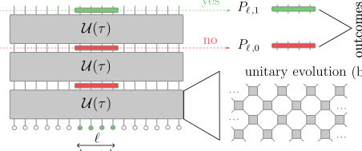
<figcaption class="paper-figure-caption"><b>Fig 1.</b> FIG. 1. Measurement protocol. (a) Circuit representa- tion of the state in Eq. (4) for a system of size L. A monitored subregion of size ℓ≪L is initialized in the target product state ∣0ℓ⟩(green circles). The unitary circuit dynamics is in- terspersed with local stroboscopic measurements on the mon- itored subregion at times τ, 2τ, . . . , kτ, where τ is the probing time. (b) The brickwork operator U(τ) = (Ui Uh)τ, built from alternating layers of two-site gates applied at half-integer and integer sites, as given in Eq. (2). (c) Local projective measure- ments are performed on the monitored subsystem only. Each outcome answers the question “is the subsystem in the target state?”, projecting...</figcaption>
</figure>
<figure class="paper-figure-card">
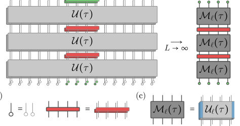
<figcaption class="paper-figure-caption"><b>Fig 2.</b> FIG. 2. Folded space representation. (a) Two-layer circuit representing the probability F(k) in Eq. (5) for the exemplary value k = 3 in the folded space, with folding per- formed at the level of the projector Pℓ,1. (b) A single-qudit propagator in the folded space (left-hand side)—indicated by darker and thicker lines—acts so that each site corresponds to the tensor product of two qubits. The folded-space projec- tor (left-hand side) likewise factorizes into the tensor product of two layers Pℓ,0 ⊗Pℓ,0 (right-hand side). (c) The opera- tor Mℓ(τ), which implements the evolution of the monitored subregion for L →∞, is obtained from the brickwork circuit Uℓ(τ) acting on the region of size...</figcaption>
</figure>
<figure class="paper-figure-card">
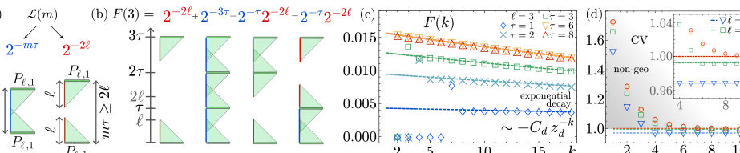
<figcaption class="paper-figure-caption"><b>Fig 3.</b> FIG. 3. Results. (a) Geometrical interpretation of the Loschmidt echo (7). Each folded-space projector Pℓ,1 enforces a larger space-time region of the circuit in Eq. (7), forming an isosceles right triangle of base ℓ(green), to be in the zero state. For mτ &lt; 2ℓ, the two projectors are causally connected, and the exponent of L(m) scales with the temporal distance mτ (blue). For mτ ≥2ℓ, L(m) factorizes into two independent contributions, each scaling exponentially with the triangle base (red). (b) Example of a partition decomposition of the first-detection probability F(k) for k = 3 and ℓ&lt; τ &lt; 2ℓ. Here, Loschmidt echoes contribute differently (red and blue) depending on the temporal distances...</figcaption>
</figure>
</div>

<p><strong>Summary.</strong> This work provides exact analytical results for the probability of first detecting a specific state in a quantum circuit undergoing local monitoring. By relating this probability to the subsystem Loschmidt echo, the authors characterize how measurement frequency dictates the detection statistics. The findings reveal a transition from simple geometric decay to complex, correlated behavior as the measurement rate changes.</p>
<p><strong>Why it may be interesting.</strong> It provides a rare exact characterization of how local measurement backaction fundamentally reshapes detection statistics in an interacting quantum many-body system, which is crucial for understanding open quantum dynamics.</p>
<details>
<summary>Detailed structure</summary>
<p><strong>Main problem.</strong> The paper derives exact analytical results for the probability of first detecting a subset of qubits back in their initial state within a locally monitored quantum circuit.</p>
<p><strong>Main result.</strong> The first-detection probability exhibits two distinct regimes: geometric statistics for infrequent monitoring, and correlated deviations from this behavior for frequent monitoring.</p>
<p><strong>Method.</strong> The analysis employs a renewal equation linking the first-detection probability to the subsystem Loschmidt echo, utilizing generating functions and pole analysis for asymptotic behavior.</p>
<p><strong>Model / system.</strong> The study focuses on the deterministic Floquet-quantum East model (DFQEM), an interacting quantum circuit subjected to local stroboscopic measurements.</p>
<p><strong>Key observables.</strong> First-Detection Return Probability (FDRP), Subsystem Loschmidt Echo, Coefficient of Variation (CV).</p>
<p><strong>Important parameters / regimes.</strong> Measurement probing time ($ au$), monitored subregion size ($\ell$), and the ratio between $  au$ and the relaxation timescale ($2\ell$).</p>
<p><strong>Assumptions / limitations.</strong> The analysis assumes the initial state of the unmonitored qubits is a bi-translationally invariant product state and relies on the renewal equation framework.</p>
<p><strong>Figures summary.</strong> Figures illustrate the measurement protocol, the folded space representation for calculation, and the dependence of the Loschmidt echo and FDRP on measurement parameters.</p>
<p><strong>Paper structure.</strong> The paper builds from defining the local monitoring protocol and the FDRP, deriving the renewal equation linking it to the Loschmidt echo, and then analyzing the resulting statistics in the limits of infrequent versus frequent measurements using generating functions.</p>
</details>
<details>
<summary>Abstract</summary>
<p>We study the interplay between local stroboscopic measurements and the unitary quantum circuit dynamics of the deterministic Floquet-quantum East model. We derive exact analytical results for the probability of first detecting a subset of qubits back in their initial state. This is achieved via a renewal equation linking the first-detection probability to the subsystem Loschmidt echo, which encodes the effective open dynamics of the monitored qubits. The resulting statistics exhibit two regimes set by the competition between the measurement probing time and the relaxation timescale of the unitary circuit dynamics: while infrequent monitoring leads to geometric first-detection statistics, frequent monitoring induces correlations that manifest as deviations from this geometric behavior. These results provide a rare exact characterization of how local measurement backaction reshapes detection statistics in an interacting quantum many-body system. In our local protocol, return probabilities are controlled by the size of the monitored subregion and can therefore be accessed on digital quantum simulators via local mid-circuit measurements.</p>
</details>
<p><sub><a href="#top">↑ back to top</a></sub></p>

<p><a id="paper-2610.00480"></a></p>
<h3 id="mixed-state-phases-induced-by-power-law-quantum-channels">⭐ <a href="http://arxiv.org/abs/2610.00480v1">Mixed-state phases induced by power-law quantum channels</a></h3>
<p><strong>Highlighted author(s):</strong> Alexey V. Gorshkov<br>
<strong>Authors:</strong> Christopher Fechisin, Tsung-Cheng Lu, Zhi-Yuan Wei, Jeet Shah, Yu-Xin Wang, Alexey V. Gorshkov, Cheng-Ju Lin<br>
<strong>Type:</strong> theory · <strong>Category:</strong> statistical mechanics · <strong>PDF:</strong> <a href="https://arxiv.org/pdf/2610.00480v1">https://arxiv.org/pdf/2610.00480v1</a><br>
<strong>Analysis basis:</strong> full PDF text, analyzed in chunks
<strong>Topic relevance:</strong> 🔥 <code>correlated / nonlocal dissipation</code> <strong>4/5</strong> · <code>driven-dissipative phase transition</code> <strong>3/5</strong> · <code>methods for driven-dissipative</code> <strong>3/5</strong> · <code>analog quantum simulation</code> <strong>2/5</strong> · <code>non-equilibrium universality</code> <strong>2/5</strong> · <code>Keldysh / 2PI / non-Gaussian methods</code> <strong>1/5</strong></p>
<div class="figure-strip-hint">↔ Scroll figures horizontally</div>
<div class="paper-figures-scroll">
<figure class="paper-figure-card">
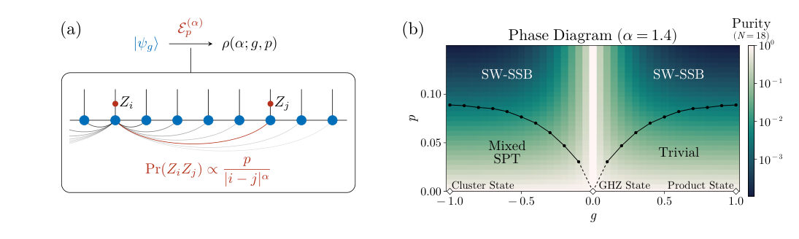
<figcaption class="paper-figure-caption"><b>Fig 1.</b> Figure 1. (a) Summary of the construction considered in this work. We produce a family of mixed states ρ(α; g, p) by decohering the MPS |ψg⟩via the power-law-correlated quantum channel E(α) p introduced in Eq. (16). (b) Phase diagram classifying ρ(α; g, p) for one choice of fixed α, namely α = 1.4. The phase diagram features two regions in which mixed analogues of the pure-state orders persist, giving way at the phase boundary p = pc(g) to SW-SSB in the Rényi-2 sense. Each point denotes a measured phase boundary, with solid lines interpolating linearly between the measured values. The dashed lines are extrapolations based on the argument that pc(g) →0 as |g| →0 within the statistical...</figcaption>
</figure>
<figure class="paper-figure-card">
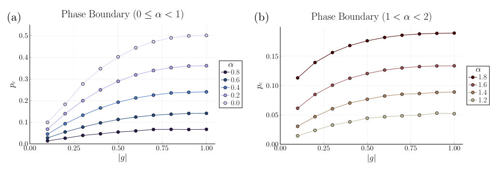
<figcaption class="paper-figure-caption"><b>Fig 2.</b> Figure 2. The phase boundaries separating the symmetric phase (p &lt; pc) from the SW-SSB phase (p &gt; pc) for various α. (a) We plot pc(g) for α &lt; 1 where p has been Kac normalized. (b) We plot pc(g) for α &gt; 1 where p has not been Kac normalized. Notice in particular that pc(g) decreases with increasing α below α = 1, while it increases with increasing α above α = 1. This behavior can be understood from the fact that limα→1 p/N1−α</figcaption>
</figure>
<figure class="paper-figure-card">
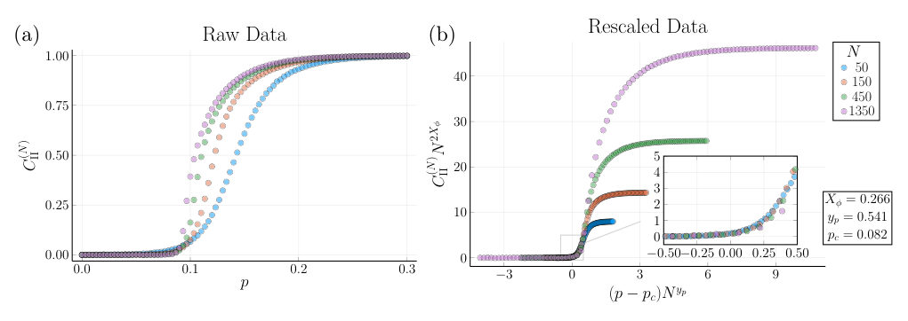
<figcaption class="paper-figure-caption"><b>Fig 3.</b> Figure 3. (a) The Rényi-2 correlator C(N) II as a function of p at fixed α = 1.4 and g = 0.6 before rescaling. (b) The Rényi-2 correlator after rescaling using the values of pc, Xϕ, and yp presented in the table to the lower right. In the inset, we present a magnified view of the same data around (p−pc) = 0 to emphasize the scaling collapse, wherein the finite-size curves C(N) II collapse to the universal curve ˜CII upon rescaling, as described in the text.</figcaption>
</figure>
<figure class="paper-figure-card">
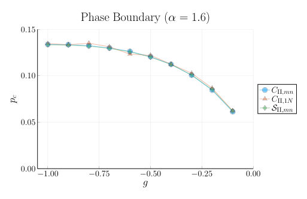
<figcaption class="paper-figure-caption"><b>Fig 4.</b> Figure 4. The critical pc extracted from finite-size scaling on the observables associated with SW-SSB (CII,mn), Rényi-2 co- herent information (CII,1N), and string order (SII,mn). This figure supports the claim that all three observables probe the same phase transition. We note that the noise in CII,1N is due to the slower convergence of MCMC for this observable. Physically, this effect arises because the edge sites have fewer neighbors than the bulk sites and hence participate in fewer Monte Carlo updates.</figcaption>
</figure>
<figure class="paper-figure-card">
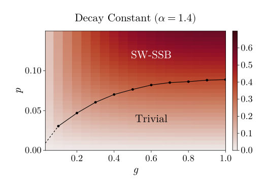
<figcaption class="paper-figure-caption"><b>Fig 5.</b> Figure 5. The purity decays in system size as e−γN, with decay constant γ dependent on g, p, and α. The heatmap shows γ at a fixed α, plotted as a function of g and p.</figcaption>
</figure>
</div>

<p><strong>Summary.</strong> This paper explores mixed-state quantum order, specifically SW-SSB, which cannot occur in pure states. By applying a long-range, power-law quantum channel to a 1D system, the authors construct a phase diagram exhibiting transitions between trivial, mixed SPT, and SW-SSB phases. The methodology combines advanced diagnostics like Rényi-2 measures with mappings to classical statistical mechanics, providing a deep theoretical understanding of environmentally induced quantum order.</p>
<p><strong>Why it may be interesting.</strong> This work directly addresses the physics of open quantum systems and quantum phase transitions, showing how non-local environmental coupling (long-range channels) can stabilize exotic ordered phases inaccessible in local models.</p>
<details>
<summary>Detailed structure</summary>
<p><strong>Main problem.</strong> The paper investigates the emergence and characterization of mixed-state quantum phases, such as Strong-to-Weak Spontaneous Symmetry Breaking (SW-SSB), which are fundamentally different from pure-state phenomena.</p>
<p><strong>Main result.</strong> By introducing a long-range quantum channel with power-law decay, the authors construct a phase diagram hosting trivial, mixed SPT, and SW-SSB phases, demonstrating that long-range interactions can induce such mixed-state order in 1D.</p>
<p><strong>Method.</strong> The analysis employs Rényi-2 diagnostics and involves mapping the quantum system dynamics to classical statistical mechanics models (like the Ising model) to analyze phase transitions.</p>
<p><strong>Model / system.</strong> The system is modeled using a family of Matrix Product States (MPS) subjected to a long-range quantum channel implementing two-body dephasing whose probability decays according to a power-law in site separation.</p>
<p><strong>Key observables.</strong> Rényi-2 diagnostics (e.g., Rényi-2 string order parameter, $C_{II}$), and the coherence information quantifying logical qubits.</p>
<p><strong>Important parameters / regimes.</strong> The power-law exponent ($\alpha$), the channel strength ($p$), and the state parameter ($g$) which controls the interpolation between trivial and SPT phases.</p>
<p><strong>Assumptions / limitations.</strong> The analysis relies on the ability to tune the mixed states to high purity for experimental feasibility, and uses mappings to classical models for theoretical analysis.</p>
<p><strong>Figures summary.</strong> Figures illustrate the phase diagram showing transitions between different ordered phases, and plots show the scaling behavior of Rényi-2 correlators and the string order parameter as a function of the decoherence strength $p$.</p>
<p><strong>Paper structure.</strong> The paper first establishes the physical problem of mixed-state order, then details the construction of the model using MPS and power-law channels. It proceeds through theoretical analysis using Rényi-2 diagnostics, mapping to classical models, and finally presents numerical results confirming the phase transitions and scaling behavior.</p>
</details>
<details>
<summary>Abstract</summary>
<p>Open quantum systems can exhibit inherently mixed quantum orders, such as strong-to-weak spontaneous symmetry breaking (SW-SSB), which have no analogue in pure states. It is generally expected that a finite-depth local quantum channel cannot induce a phase transition to SW-SSB in one spatial dimension. We circumvent this obstruction by introducing a long-range quantum channel, which implements two-body dephasing on pairs of sites with probability falling off according to a power-law in the site separation. Applying this channel to a one-parameter family of matrix product states interpolating between trivial and symmetry-protected topological (SPT) phases, we construct a phase diagram that hosts trivial, mixed SPT, and SW-SSB phases with respect to Rényi-2 diagnostics. Notably, the mixed SPT phase is distinct from previously studied decohered SPT phases: it hosts two logical qubits and exhibits nonvanishing Rényi-2 string order, despite vanishing conventional string order. Through a series of mappings to a classical statistical mechanics model, we establish a direct connection between the loss of logical information and the onset of SW-SSB in this model. Finally, we consider the feasibility of experimental realization of the phenomena we have studied. We emphasize that our family of mixed states can be tuned to regimes of high purity, substantially reducing measurement overhead and enabling their experimental realization and detection on near-term quantum hardware.</p>
</details>
<p><sub><a href="#top">↑ back to top</a></sub></p>

<p><a id="paper-2610.02157"></a></p>
<h3 id="learning-many-body-hamiltonians-using-a-local-probe">⭐ <a href="http://arxiv.org/abs/2610.02157v1">Learning Many-Body Hamiltonians Using a Local Probe</a></h3>
<p><strong>Highlighted author(s):</strong> Alexey V. Gorshkov<br>
<strong>Authors:</strong> Suying Liu, Zitai Xu, Alexey V. Gorshkov, Xiaodi Wu, Yu-Xin Wang, Zhi-Yuan Wei<br>
<strong>Type:</strong> theory · <strong>Category:</strong> quantum information and computing · <strong>PDF:</strong> <a href="https://arxiv.org/pdf/2610.02157v1">https://arxiv.org/pdf/2610.02157v1</a><br>
<strong>Analysis basis:</strong> full PDF text, analyzed in chunks
<strong>Topic relevance:</strong> <code>analog quantum simulation</code> <strong>3/5</strong> · <code>quantum measurements</code> <strong>3/5</strong> · <code>QC/QI experiment</code> <strong>1/5</strong></p>
<div class="figure-strip-hint">↔ Scroll figures horizontally</div>
<div class="paper-figures-scroll">
<figure class="paper-figure-card">
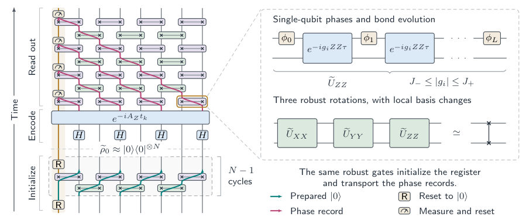
<figcaption class="paper-figure-caption"><b>Fig 1.</b> FIG. 1. Overview of the learning protocol. (a) Time runs upward. Repeatedly resetting the bright qubit and applying robust SWAPs prepares the register approximately in the all-zero state. The unknown Hamiltonian parameters are then encoded in parallel into quantum states distributed across the system. Alternating SWAP layers transport this information back toward the bright qubit, where the encoded states are read out sequentially. (b) The SWAP operations are constructed directly from the unknown interactions using quantum signal processing. Combining robust rotations along three axes produces a SWAP that works uniformly over the promised range of interaction strengths, without prior...</figcaption>
</figure>
</div>

<p><strong>Summary.</strong> This paper presents a novel protocol to learn the parameters of an unknown many-body Hamiltonian using measurements restricted to a single local qubit. By employing parallel phase encoding and robust quantum information transfer techniques, the authors achieve Heisenberg-limited precision scaling. This establishes a scalable route for characterizing complex quantum dynamics with minimal measurement access.</p>
<p><strong>Why it may be interesting.</strong> This work provides a concrete, scalable measurement protocol that drastically reduces the experimental overhead required to characterize complex quantum dynamics, which is crucial for designing and benchmarking quantum hardware.</p>
<details>
<summary>Detailed structure</summary>
<p><strong>Main problem.</strong> The paper addresses the challenge of reconstructing unknown many-body Hamiltonians by measuring only a single, local qubit.</p>
<p><strong>Main result.</strong> It demonstrates that a single measurable qubit is sufficient to learn all $O(N)$ parameters of a bounded-degree two-body Hamiltonian on $N$ qubits at the Heisenberg limit.</p>
<p><strong>Method.</strong> The protocol combines parallel phase encoding with robust information transfer, utilizing synthesized SWAP gates to move state information from distant qubits to the local probe.</p>
<p><strong>Model / system.</strong> The system is an $N$-qubit chain or general graph evolving under an unknown nearest-neighbor two-body Hamiltonian. Control is restricted to fast single-qubit operations and measurement on one 'bright qubit'.</p>
<p><strong>Key observables.</strong> The primary observables are the expectation values of Pauli operators ($\langle X 
angle_t, \langle Y 
angle_t, \langle Z 
angle_t$) measured on the local probe qubit.</p>
<p><strong>Important parameters / regimes.</strong> The scaling is characterized by achieving Heisenberg-limited precision ($\epsilon$) and a total query time of $e^{O(N)}$ for the chain, matching fundamental lower bounds.</p>
<p><strong>Assumptions / limitations.</strong> Assumes fast single-qubit control and the existence of a connected reference backbone interaction to facilitate information propagation.</p>
<p><strong>Figures summary.</strong> Figure 1 illustrates the protocol overview, showing initialization, parallel encoding of unknown parameters into phases, and sequential readout at the bright qubit, including details on constructing robust SWAP operations.</p>
<p><strong>Paper structure.</strong> The paper develops the protocol by first establishing the general framework for local-probe Hamiltonian learning, then detailing the specific implementation for the 1D chain model, and finally analyzing the complexity scaling for arbitrary bounded-degree interaction graphs using graph theory techniques.</p>
</details>
<details>
<summary>Abstract</summary>
<p>Hamiltonian learning provides a systematic framework for reconstructing unknown quantum dynamics. However, existing protocols typically assume direct measurement access to the entire system. With fast single-qubit control and a connected reference backbone, we show that a single measurable qubit suffices to learn all $O(N)$ independent parameters of a bounded-degree two-body Hamiltonian on $N$ qubits at the Heisenberg limit. Crucially, our protocol uses robust SWAP gates synthesized by quantum signal processing, enabling coherent transfer of states evolving under distant Hamiltonian parameters to the measurable qubit. This transfer requires no prior calibration of the Hamiltonian parameters of the intermediate links. A parallel learning architecture achieves total query time $\widetilde{O}(N)$ for an $N$-qubit chain, while retaining Heisenberg-limited precision scaling. On the chain, these scalings match the fundamental precision and information-propagation lower bounds up to logarithmic factors. The framework further extends to arbitrary bounded-degree interaction graphs. Our results establish a scalable route to learning an extensive number of many-body Hamiltonian parameters through only a local measurement interface.</p>
</details>
<p><sub><a href="#top">↑ back to top</a></sub></p>

<p><a id="paper-2610.00631"></a></p>
<h3 id="ctmrg-as-a-tensor-network-message-passing-algorithm">⭐ <a href="http://arxiv.org/abs/2610.00631v1">CTMRG as a tensor-network message-passing algorithm</a></h3>
<p><strong>Highlighted author(s):</strong> Andrii Sotnikov<br>
<strong>Authors:</strong> Illia Lukin, Andrii Sotnikov<br>
<strong>Type:</strong> theory · <strong>Category:</strong> statistical mechanics · <strong>PDF:</strong> <a href="https://arxiv.org/pdf/2610.00631v1">https://arxiv.org/pdf/2610.00631v1</a><br>
<strong>Analysis basis:</strong> full PDF text, analyzed in chunks
<strong>Topic relevance:</strong> <code>methods for driven-dissipative</code> <strong>3/5</strong> · <code>analog quantum simulation</code> <strong>2/5</strong></p>
<div class="figure-strip-hint">↔ Scroll figures horizontally</div>
<div class="paper-figures-scroll">
<figure class="paper-figure-card">
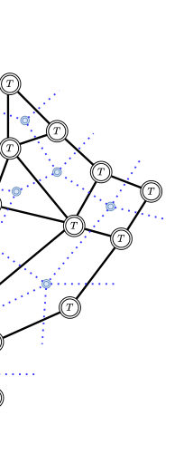
<figcaption class="paper-figure-caption"><b>Fig 1.</b> Figure 1: Tensors T are placed on the vertices of the graph G, and contracted indices correspond to graph edges in black lines. The dual graph is constructed by placing dual vertices (in blue) on the faces of the original graph and connecting the dual vertices by the edge (dotted blue lines) if the original faces share the edge.</figcaption>
</figure>
<figure class="paper-figure-card">
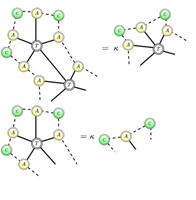
<figcaption class="paper-figure-caption"><b>Fig 2.</b> Figure 2: Definition of the MPS messages. (a) A general subgraph consisting of ten- sors T with varying connectivity, together with its boundary represented as an MPS; the MPS consists of the message tensors A and various corner matrices C, C−1,.... (b) Derivation of the self-consistency equation for the tensor A: a single bulk ten- sor T can be fully isolated by an MPS ring (except for one bond), and this isolated contraction must equal the message tensor on the remaining bond together with the appropriate corner matrices. This yields the update equation for A.</figcaption>
</figure>
<figure class="paper-figure-card">
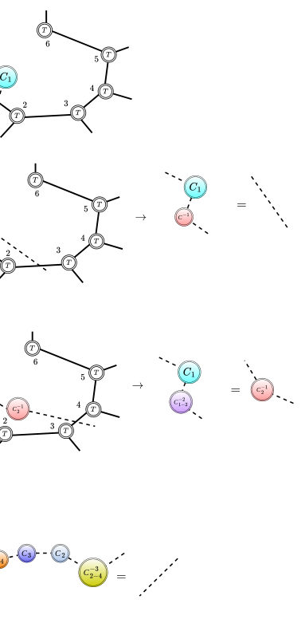
<figcaption class="paper-figure-caption"><b>Fig 3.</b> Figure 3: Derivation of the relations between different corner matrices: for a 7-gon face with corner matrices C1,..., C7, an MPS message isolating a single vertex 7 can be continued across different edges of the polygon, giving equivalent representations of the same environment — with no corner matrix in the chosen gauge (a), with the inverse matrix C−1 1 (red) (b), or with the two-index matrix C−2 1−2 = C−1 1 C−1 2 (vio- let) (c). Comparing these equivalent representations fixes the relations between the different corner matrices. (d) An illustration of the general corner matrices, using C−3 2−4 as an example: this is the corner matrix that lies on one side of vertices 2,3,4, without...</figcaption>
</figure>
<figure class="paper-figure-card">
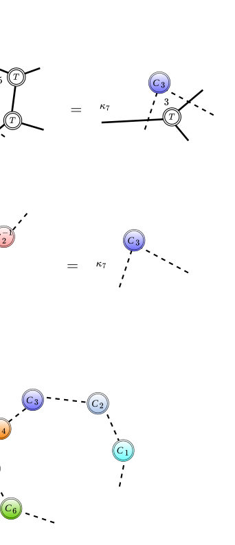
<figcaption class="paper-figure-caption"><b>Fig 4.</b> Figure 4: The derivation of the CTM equations for the corner matrices. (a) Consider a face of the graph — a polygon, here a 7-gon — with its vertices labeled for con- venience. We isolate vertex 7 with an MPS message and continue this MPS until it crosses bonds 2–3 and 3–4; consistency of the message environment then forces this isolated-vertex contraction to equal the C3 corner matrix at vertex 3. (b) Rewriting the matrices C−2 1−2 and C−3 4−6 in terms of C1, C2,..., C7 casts the equation purely in terms of the tensors A and the matrices C. (c) The equivalent, most universal form of the equation: the MPS message isolating vertex k equals the product of all the corner matrices around the...</figcaption>
</figure>
<figure class="paper-figure-card">
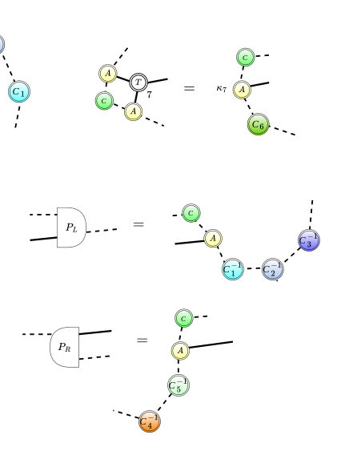
<figcaption class="paper-figure-caption"><b>Fig 5.</b> Figure 5: The derivation of the CTMRG projectors. (a) The corner-matrix equation at vertex 7, together with the update equation for the tensor A at the same vertex. The diagram for the A update is a subgraph of the diagram for the C update, so the two equations can be combined. (b) Combining the two equations in (a) gives the biorthogonal relation shown here: with a suitable normalization, the vectors carried by two A tensors on the same bond are mutually orthogonal. This relation lets us define the biorthogonal projectors PL, PR. Note that the two projectors carry different numbers of inverse C matrices; this asymmetry is purely conventional — we split the corner matrices evenly between PL...</figcaption>
</figure>
</div>

<p><strong>Summary.</strong> This paper develops a unified message-passing framework to compute tensor network contractions, specifically reformulating the Corner Transfer Matrix Renormalization Group (CTMRG). By treating CTMRG as a message-passing algorithm on general planar graphs, it provides a systematic method that unifies previous, case-specific techniques. This advances the computational analysis of 2D statistical mechanics models on complex geometries.</p>
<p><strong>Why it may be interesting.</strong> While focused on classical statistical mechanics, the message-passing formalism developed here (reconciling CTMRG and BP) provides a powerful, systematic computational tool applicable to quantum many-body systems described by tensor networks, which is relevant for simulating quantum Hamiltonians.</p>
<details>
<summary>Detailed structure</summary>
<p><strong>Main problem.</strong> The paper addresses the computationally challenging problem of exactly contracting tensor networks defined on two-dimensional planar graphs.</p>
<p><strong>Main result.</strong> It successfully formulates the Corner Transfer Matrix Renormalization Group (CTMRG) as a systematic message-passing algorithm analogous to Belief Propagation (BP) for general planar graphs.</p>
<p><strong>Method.</strong> The method involves defining message tensors and 'corner' matrices that encode local information, establishing self-consistency equations for these tensors by ensuring consistency across shared faces.</p>
<p><strong>Model / system.</strong> The theory is tested on the ferromagnetic Ising model and generalized to arbitrary planar graphs, including those with hyperbolic geometry.</p>
<p><strong>Key observables.</strong> The partition function, correlation functions, and the message tensors/corner matrices themselves are the primary focus.</p>
<p><strong>Important parameters / regimes.</strong> The virtual bond dimension ($\chi$) is a key parameter, with the Belief Propagation limit corresponding to $\chi=1$.</p>
<p><strong>Assumptions / limitations.</strong> The derivation assumes the existence of a gauge condition for every polygon face to simplify the structure of the corner matrices.</p>
<p><strong>Figures summary.</strong> Figures illustrate the placement of tensors on vertices and dual graphs, define the message MPS environment, and show the derivation of the universal product form for the CTM equations and the biorthogonal projectors.</p>
<p><strong>Paper structure.</strong> The paper builds by first establishing the tensor network setup, then introducing the message-passing framework using corner matrices, deriving the self-consistency equations for these matrices, and finally showing how these equations fully determine the message MPS.</p>
</details>
<details>
<summary>Abstract</summary>
<p>We formulate the corner transfer matrix equations, and the corner transfer matrix renormalization group built on them, as a set of local equations on general planar graphs. These equations depend only on the local subgraphs of the planar graph and are glued together consistently to describe the whole graph. Solving them yields message tensors and corner matrices, which can be used to construct an MPS environment for any connected subgraph. We test the proposed equations on the ferromagnetic Ising model, on a variety of infinite lattices (including hyperbolic ones) and on finite graphs, and find systematic improvement over belief propagation.</p>
</details>
<p><sub><a href="#top">↑ back to top</a></sub></p>

<p><a id="paper-2610.02075"></a></p>
<h3 id="universal-bound-and-phase-transition-in-many-body-fermionic-non-gaussianity">⭐ <a href="http://arxiv.org/abs/2610.02075v1">Universal Bound and Phase Transition in Many-Body Fermionic Non-Gaussianity</a></h3>
<p><strong>Highlighted author(s):</strong> Yuto Ashida<br>
<strong>Authors:</strong> Masahiro Hoshino, Ryota Matsuda, Yuto Ashida<br>
<strong>Type:</strong> theory · <strong>Category:</strong> statistical mechanics · <strong>PDF:</strong> <a href="https://arxiv.org/pdf/2610.02075v1">https://arxiv.org/pdf/2610.02075v1</a><br>
<strong>Analysis basis:</strong> full PDF text, analyzed in chunks
<strong>Topic relevance:</strong> <code>Keldysh / 2PI / non-Gaussian methods</code> <strong>3/5</strong> · <code>analog quantum simulation</code> <strong>1/5</strong></p>
<div class="figure-strip-hint">↔ Scroll figures horizontally</div>
<div class="paper-figures-scroll">
<figure class="paper-figure-card">
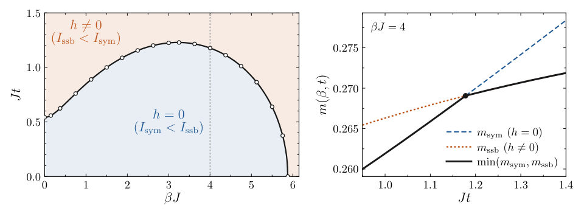
<figcaption class="paper-figure-caption"><b>Fig 1.</b> FIG. 1. Phase diagram (left) and MRE density (right) of the KM state in the large-N SYK model, obtained by numerically solving the SD equations with L = 512 integration points, without extrapolation to the continuum limit. Left: regions where the symmetric saddle (h = 0, blue shading) or the saddle with broken symmetry (h ̸= 0, orange shading) has the smaller action. Open circles mark crossing points of the two actions, and the solid curve gives the phase boundary. The vertical line with short dashes marks the cut at βJ = 4 shown in the right panel. Right: msym (blue dashed) and mssb (orange dotted), together with their minimum m(β, t) (solid black), as functions of Jt at βJ = 4, with m(β,...</figcaption>
</figure>
</div>

<p><strong>Summary.</strong> This work analyzes fermionic non-Gaussianity using the magic Rényi entropy (MRE) to characterize quantum states in many-body systems. The authors establish a universal upper bound for MRE and demonstrate that the MRE can detect a first-order phase transition in the SYK model that is not visible in the system's thermal free energy. This highlights MRE as a sensitive probe of quantum correlations beyond standard thermodynamic measures.</p>
<p><strong>Why it may be interesting.</strong> The detection of a non-Gaussianity transition that decouples from the standard thermal free energy is a powerful diagnostic tool for characterizing quantum phases in strongly interacting systems.</p>
<details>
<summary>Detailed structure</summary>
<p><strong>Main problem.</strong> The paper investigates fermionic non-Gaussianity, a resource for quantum computation, by deriving its universal upper bound and analyzing its growth dynamics.</p>
<p><strong>Main result.</strong> They prove that typical Haar-random states achieve a maximal MRE density of ln(4/3) per Majorana, and they identify a first-order phase transition in the MRE density for the SYK model that is invisible to the thermal free energy.</p>
<p><strong>Method.</strong> The analysis uses the magic Rényi entropy (MRE) as a diagnostic tool, employing path integrals, saddle-point approximations, and solving Schwinger-Dyson equations.</p>
<p><strong>Model / system.</strong> The study focuses on quantum many-body systems, specifically utilizing the Sachdev-Ye-Kitaev (SYK) Hamiltonian to model interacting dynamics, and analyzing purity measures for fermionic states.</p>
<p><strong>Key observables.</strong> Magic Rényi entropy (MRE), Purity ($
u_2$), Universal Upper Bound, and the difference between annealed and quenched logarithmic averages.</p>
<p><strong>Important parameters / regimes.</strong> Large-system limit (N-&gt;infinity), imaginary and real-time durations ($eta, t$), and the coupling strength J in the SYK model.</p>
<p><strong>Assumptions / limitations.</strong> The analysis relies heavily on the saddle-point approximation to determine the leading exponential behavior in the large-N limit.</p>
<p><strong>Figures summary.</strong> Figures illustrate the phase diagram and the MRE density of the KM state, showing a kink marking a first-order transition.</p>
<p><strong>Paper structure.</strong> The paper progresses from establishing the universal upper bound for MRE in random states, to analyzing the dynamics of the MRE in the SYK model, and finally deriving the necessary saddle-point equations to confirm the phase transition structure.</p>
</details>
<details>
<summary>Abstract</summary>
<p>Fermionic non-Gaussianity is a resource for universal quantum computation that can be generated by interactions in quantum many-body systems. Using the magic Rényi entropy (MRE) as a measure of non-Gaussianity, we derive its universal upper bound and Haar mean, proving that typical Haar-random states attain the maximal MRE density of $\ln(4/3)$ per Majorana in the large-system limit. We also show that the MRE can differ extensively between states with identical covariance matrices. To investigate how non-Gaussianity grows toward this maximal density, we evolve a Gaussian state in imaginary and real time under the Sachdev-Ye-Kitaev Hamiltonian. By varying the imaginary- and real-time durations, we identify a first-order transition marked by a kink in the MRE density and spontaneous breaking of the permutation symmetry among the four copies used to evaluate the MRE. This transition represents a qualitative change in the non-Gaussianity of the state that is not reflected in the thermal free energy.</p>
</details>
<p><sub><a href="#top">↑ back to top</a></sub></p>

<p><a id="paper-2610.00826"></a></p>
<h3 id="thermal-entanglement-transitions-from-strong-math24math-symmetry">⭐ <a href="http://arxiv.org/abs/2610.00826v1">Thermal entanglement transitions from strong $\textrm{SU}(2)$ symmetry</a></h3>
<p><strong>Highlighted author(s):</strong> Ehud Altman<br>
<strong>Authors:</strong> Siqi Mo, Ehud Altman, Samuel J. Garratt<br>
<strong>Type:</strong> theory · <strong>Category:</strong> statistical mechanics · <strong>PDF:</strong> <a href="https://arxiv.org/pdf/2610.00826v1">https://arxiv.org/pdf/2610.00826v1</a><br>
<strong>Analysis basis:</strong> full PDF text, analyzed in chunks
<strong>Topic relevance:</strong> <code>Keldysh / 2PI / non-Gaussian methods</code> <strong>1/5</strong> · <code>analog quantum simulation</code> <strong>1/5</strong> · <code>methods for driven-dissipative</code> <strong>1/5</strong></p>
<div class="figure-strip-hint">↔ Scroll figures horizontally</div>
<div class="paper-figures-scroll">
<figure class="paper-figure-card">
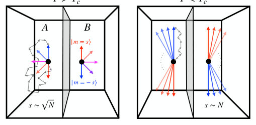
<figcaption class="paper-figure-caption"><b>Fig 1.</b> FIG. 1. Coincidence of thermal and entanglement transitions in the singlet sector of locally interacting ferromagnets. Due to the singlet constraint, pure states with half-system spin s are entangled superpositions with Schmidt rank 2s + 1. Each of the two subsystem A and B contains approximately N/2 spins and these must be entangled into a total singlet. In the paramagnetic phase the half-system spin (colored arrows) scales as s ∼ √</figcaption>
</figure>
<figure class="paper-figure-card">
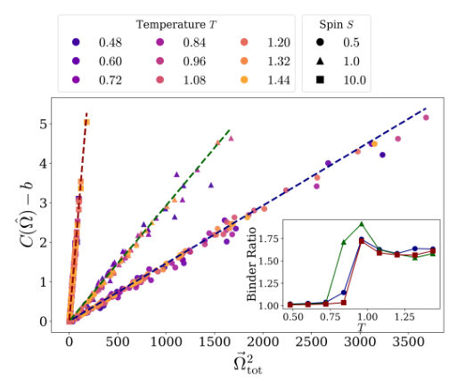
<figcaption class="paper-figure-caption"><b>Fig 2.</b> FIG. 2. Numerical integration of C(ˆΩ) (scatter points) shifted to the origin and the analytical prediction C(ˆΩ) = 3 2 S N ⃗Ω2 tot (dashed lines), plotted against ⃗Ω2 tot, for various S indicated by different shapes. The configurations ˆΩare sampled from the semiclassical theory Eq. (32) on a three-dimensional cubic lattice with N = L3 = 83, and S = 0.5 , 1.0 , 10, with 15 data points drawn at each temperature. The temperature range is chosen to span both the ordered phase and the disordered phase. The critical temperature separating the two phases is identified by the Binder ratio B = ⟨⃗Ω4 Oct⟩/⟨⃗Ω2 Oct⟩2</figcaption>
</figure>
<figure class="paper-figure-card">
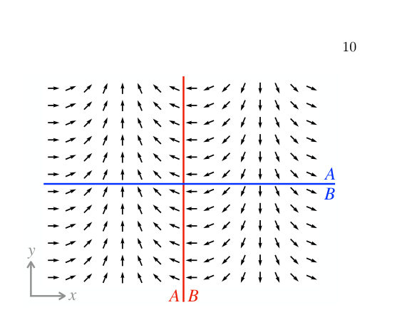
<figcaption class="paper-figure-caption"><b>Fig 3.</b> FIG. 3. Two-dimensional spatial slice through a d- dimensional saddle point configuration ¯Ωj (black arrows) in an anisotropic system with Lx &gt; Li̸=x. These configurations are only stable against thermal fluctuations in d ≥3 and at low temperatures. The wavevector of the saddle point is along the spatial x direction. For the bipartition AB indicated by the red line the subsystem total spin ⃗ΩA is dominated by the saddle point. In this case we find the lower bounds on mixed-state entanglement measures in Eq. (49). For the blue bipartition the subsystem total spin for the saddle point configuration vanishes ¯ΩA = 0, and the statistical properties of ⃗ΩA are instead controlled by...</figcaption>
</figure>
<figure class="paper-figure-card">
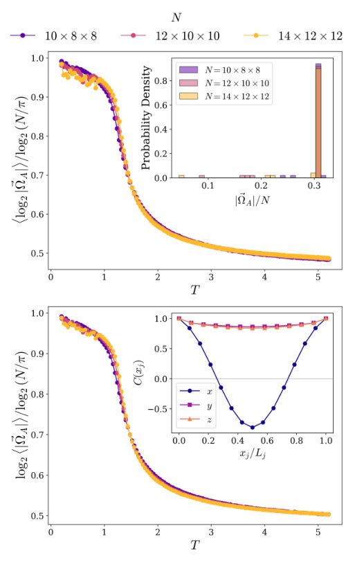
<figcaption class="paper-figure-caption"><b>Fig 4.</b> FIG. 4. Monte Carlo calculations of the lower bounds on (a) distillable entanglement and (b) logarithmic negativity in anisotropic systems with S = 50. For S ≫1 the full lower bounds are approximately ⟨log2 |⃗ΩA|⟩and log2⟨|⃗ΩA|⟩, respectively. Here the system dimensions are N = Lx × Ly × Lz (see legend), where Lx &gt; Ly = Lz, and the bipartition of the system into equal halves A and B is across a spatial y −z plane. In the main panels we find both ⟨log2 |⃗ΩA|⟩/ log2(N/π) and log2⟨|⃗ΩA|⟩/ log2(N/π) to approach 1 at low temperatures as predicted in Eq. (49), and to approach 0.5 at high temperatures as predicted in Eq. (44), where the log2(π) is a subleading (in L) factor that should be...</figcaption>
</figure>
<figure class="paper-figure-card">
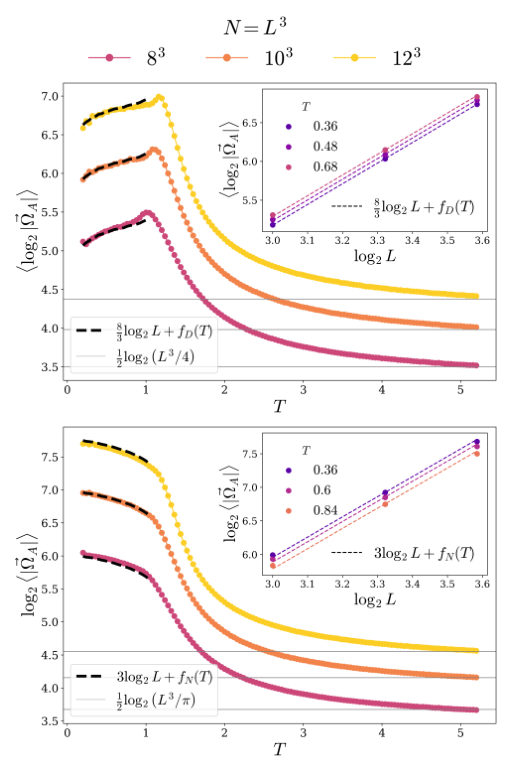
<figcaption class="paper-figure-caption"><b>Fig 5.</b> FIG. 5. Monte Carlo calculations of (a) ⟨log2 |⃗ΩA|⟩and (b) log2⟨|⃗ΩA|⟩in isotropic systems L = Lx,y,z with L = 8, 10, 12 (legend) and S = 50. Here we average these quantities over equal bipartitions AB of the system across planes normal to each of the three coordinate axes. In the inset of (a) we show ⟨log2 |⃗ΩA|⟩versus the prediction (8/3) log2 L+fD(T) in Eq. (55), where at each T the object fD(T) is determined via a single-parameter fit to ⟨log2 |⃗ΩA|⟩versus log2 L (see inset). The dashed black lines in the main panel of (a) show (8/3) log2 L + fD(T) for each L. In the main panel of (b), dashed black lines show 3 log2 L+fN(T), where at each T the object fN(T) is again a fitting...</figcaption>
</figure>
</div>

<p><strong>Summary.</strong> This work analyzes mixed-state entanglement in spin systems possessing strong SU(2) symmetry, showing that thermal ordering transitions coincide with entanglement transitions. By developing a semiclassical theory, the authors prove that entanglement scaling changes dramatically between paramagnetic and ferromagnetic phases. This establishes a deep connection between the statistical mechanics of the system and its quantum information content.</p>
<p><strong>Why it may be interesting.</strong> It provides a concrete, quantitative link between macroscopic thermodynamic phase transitions (ordering) and quantum information measures (entanglement) in the context of open quantum systems dynamics.</p>
<details>
<summary>Detailed structure</summary>
<p><strong>Main problem.</strong> The study investigates how finite-temperature ordering transitions in strongly symmetric spin systems are directly linked to transitions in mixed-state entanglement.</p>
<p><strong>Main result.</strong> The entanglement measures (distillable entanglement and logarithmic negativity) exhibit a transition in their system size scaling, moving from logarithmic to parametrically faster growth across the ferromagnetic phase transition.</p>
<p><strong>Method.</strong> The authors combine establishing relations between entanglement and spin correlations with developing a semiclassical theory for the singlet sector, which is verified using Monte Carlo and exact numerical simulations.</p>
<p><strong>Model / system.</strong> The system consists of locally interacting spin systems with ferromagnetic interactions, analyzed specifically within the total singlet sector ($   ext{SU}(2)$ symmetry). The analysis uses Gibbs states restricted to this singlet subspace.</p>
<p><strong>Key observables.</strong> Mixed-state entanglement measures (distillable entanglement, logarithmic entanglement negativity) and spin correlations ($ ext{Tr}[
ho_0 \vec{S}_i \cdot \vec{S}_j]$).</p>
<p><strong>Important parameters / regimes.</strong> Temperature ($T$), system size ($N$), and the ferromagnetic coupling strength.</p>
<p><strong>Assumptions / limitations.</strong> The semiclassical theory is valid in the large $S$ limit, and the analysis relies on saddle-point approximations for path integrals.</p>
<p><strong>Figures summary.</strong> Figure 1 illustrates the coincidence of thermal and entanglement transitions in the singlet sector, showing the scaling of the half-system spin ($\sim \sqrt{N}$ vs. $\sim N$) across the critical temperature $T_c$.</p>
<p><strong>Paper structure.</strong> The paper first establishes the connection between entanglement and correlations in the singlet sector, develops a semiclassical theory for the large $S$ limit, derives the scaling laws for entanglement measures, and finally confirms these predictions using numerical simulations and exact 1D calculations.</p>
</details>
<details>
<summary>Abstract</summary>
<p>We study mixed-state entanglement in Gibbs states with strong $\mathrm{SU}(2)$ symmetry, focusing on locally interacting spin systems with ferromagnetic interactions. Our main result is to show that finite-temperature ordering transitions are associated with entanglement transitions, and therefore the steady state of strongly symmetric Lindbladians can exhibit entanglement transitions. While in the paramagnetic phase it is known that the distillable entanglement and logarithmic entanglement negativity between two halves of a large system grow logarithmically with the square root of the number of spins, we show that in ferromagnetic phases these quantities grow parametrically faster with system size. To arrive at this result we first establish relations between these mixed-state entanglement measures and spin correlations in states that are singlets under global $\rm{SU}(2)$ symmetry transformations. We then introduce a semiclassical theory for $\rm{SU}(2)$ singlet thermal states. While the global singlet constraint generally enters this theory as a complicated function of the full semiclassical spin configuration, we show that in large $S$ limit it simplifies drastically to a Gaussian suppression of total magnetization in disordered phases as well as in ordered phases in the vicinity of continuous thermal phase transitions. This leads us to a field theory describing spin correlations in the singlet sector. Using this we determine the behavior of various probes of mixed-state entanglement at low and at high temperatures, supporting our analytical results using numerical Monte Carlo simulations of a three-dimensional lattice realization of our semiclassical theory. We also use exact numerics in one-dimensional spin-$1/2$ systems to confirm our predictions for the scaling of mixed-state entanglement with correlation length and system size in the paramagnetic phase.</p>
</details>
<p><sub><a href="#top">↑ back to top</a></sub></p>

<p><a id="paper-2610.01038"></a></p>
<h3 id="function-like-pseudorandom-unitaries-generate-pseudorandom-quantum-processes">⭐ <a href="http://arxiv.org/abs/2610.01038v1">Function-like pseudorandom unitaries generate pseudorandom quantum processes</a></h3>
<p><strong>Highlighted author(s):</strong> Alexey V. Gorshkov<br>
<strong>Authors:</strong> Zitai Xu, Rahul Arvind, Kishor Bharti, Tobias Haug, Dax Enshan Koh, Wai-Keong Mok, Andrew Tanggara, Alexey V. Gorshkov<br>
<strong>Type:</strong> theory · <strong>Category:</strong> quantum information and computing · <strong>PDF:</strong> <a href="https://arxiv.org/pdf/2610.01038v1">https://arxiv.org/pdf/2610.01038v1</a><br>
<strong>Analysis basis:</strong> full PDF text, analyzed in chunks</p>
<div class="figure-strip-hint">↔ Scroll figures horizontally</div>
<div class="paper-figures-scroll">
<figure class="paper-figure-card">
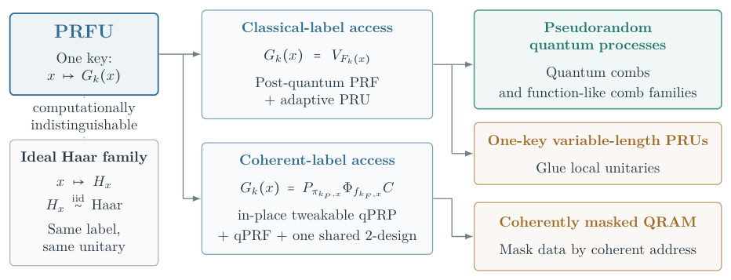
<figcaption class="paper-figure-caption"><b>Fig 1.</b> FIG. 1. Overview of PRFU constructions and selected applications. A single key specifies a unitary family that emulates independent Haar unitaries, with repeated labels reusing the same unitary. The two branches give constructions for classical- label access (Sec. III) and coherent-label access (Sec. IV). Retaining private memory yields pseudorandom combs and function- like comb families (Sec. V); gluing local unitaries yields one-key variable-length PRUs (Sec. VI A); coherent control by memory addresses enables masked QRAM queries (Sec. VI C).</figcaption>
</figure>
<figure class="paper-figure-card">
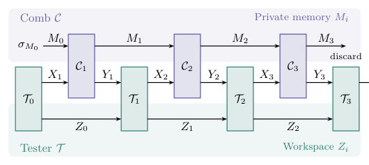
<figcaption class="paper-figure-caption"><b>Fig 2.</b> FIG. 2. A three-round quantum comb (purple) interacting with a tester (green). The comb receives Xi, returns Yi, and retains private memory Mi between rounds. The tester interleaves its operations with the comb’s teeth, carrying its own workspace Zi from one operation to the next. The comb starts with memory state σM0 and discards its terminal memory. The tester produces the final outcome.</figcaption>
</figure>
</div>

<p><strong>Summary.</strong> This work introduces Pseudorandom Function-like Unitaries (PRFU) to efficiently generate entire families of unitaries mimicking true random quantum evolution. By distinguishing between classical and coherent label access, the authors provide rigorous security proofs for these constructions. This advances quantum pseudorandomness from single operations to reusable, complex quantum dynamics for applications like quantum authentication and QRAM emulation.</p>
<p><strong>Why it may be interesting.</strong> The ability to generate complex, random-looking quantum dynamics efficiently is crucial for simulating complex quantum systems or designing quantum protocols that require high levels of randomness.</p>
<details>
<summary>Detailed structure</summary>
<p><strong>Main problem.</strong> The paper addresses the need for an efficient, reusable family of pseudorandom unitaries to emulate the complex behavior of Haar-random quantum evolution, which is typically exponentially hard to describe.</p>
<p><strong>Main result.</strong> They introduce Pseudorandom Function-like Unitaries (PRFU) that generate such families using a single short key, providing security proofs for both classical and coherent label access.</p>
<p><strong>Method.</strong> The construction relies on combining post-quantum pseudorandom functions (PRF) with pseudorandom unitaries (PRU) and employs advanced cryptographic techniques like indexed path-recording and recursive unitary gluing for security proofs.</p>
<p><strong>Model / system.</strong> The model involves quantum unitaries $U(2n)$ acting on data and label registers. The core objects are the PRFU family $\{G_k(x)\}$ and the resulting pseudorandom quantum processes, including quantum combs.</p>
<p><strong>Key observables.</strong> Distinguishing advantage (computational indistinguishability), acceptance probabilities, and the ability to maintain quantum coherence across label superpositions.</p>
<p><strong>Important parameters / regimes.</strong> Security parameter $\lambda$, number of qubits $n$, and the number of queries $q$ or recursion depth $R$.</p>
<p><strong>Assumptions / limitations.</strong> Security proofs rely on the existence of post-quantum pseudorandom functions (PRF) and quantum-secure primitives.</p>
<p><strong>Figures summary.</strong> Figure 1 summarizes the key concepts, illustrating PRFU constructions for classical vs. coherent label access and detailing applications like masked QRAM and quantum combs.</p>
<p><strong>Paper structure.</strong> The paper develops the PRFU concept, first analyzing classical-label access using PRFs, then extending to coherent-label access using path-recording, and finally demonstrating applications like variable-width unitaries and quantum combs via recursive gluing.</p>
</details>
<details>
<summary>Abstract</summary>
<p>Haar-random unitaries provide a canonical model of generic random quantum evolution, but they typically have exponential description and circuit complexity. Although pseudorandom unitaries efficiently emulate a single Haar-random unitary, many tasks require an entire reusable family of independently random-looking operations. We introduce pseudorandom function-like unitaries (PRFU), which generate such a family indexed by public labels using only a single short key. We distinguish classical- and coherent-label access and establish security under adaptive quantum queries. For classical labels, we provide a generic construction from a post-quantum pseudorandom function and a pseudorandom unitary. For coherent labels, we use an indexed path-recording framework to analyze interference across labels and prove security of a construction based on quantum-secure function and permutation primitives. We further show that PRFUs generate pseudorandom channels and quantum combs with private memory, which are secure against adaptive interventions and concurrent sessions. Combining PRFUs with unitary gluing yields a one-key family of pseudorandom unitaries whose supported register widths can be chosen after key generation. Further applications include nonce-resolved quantum authentication, coherently masked QRAM queries, and efficient emulation of random multi-time dynamics. Our results extend quantum pseudorandomness from individual operations to efficiently generated families of random-looking quantum dynamics.</p>
</details>
<p><sub><a href="#top">↑ back to top</a></sub></p>

<p><a id="paper-2610.00635"></a></p>
<h3 id="engineering-non-ergodic-properties-in-two-dimensional-quantum-many-body-systems"><a href="http://arxiv.org/abs/2610.00635v1">Engineering non-ergodic properties in two dimensional quantum many-body systems</a></h3>
<p><strong>Authors:</strong> Nyayabanta Swain, Gabriel Lemarié, Shaffique Adam<br>
<strong>Type:</strong> theory · <strong>Category:</strong> other · <strong>PDF:</strong> <a href="https://arxiv.org/pdf/2610.00635v1">https://arxiv.org/pdf/2610.00635v1</a><br>
<strong>Analysis basis:</strong> full PDF text, analyzed in chunks
<strong>Topic relevance:</strong> 🔥 <code>scars &amp; prethermalization</code> <strong>5/5</strong> · <code>analog quantum simulation</code> <strong>3/5</strong></p>
<div class="figure-strip-hint">↔ Scroll figures horizontally</div>
<div class="paper-figures-scroll">
<figure class="paper-figure-card">
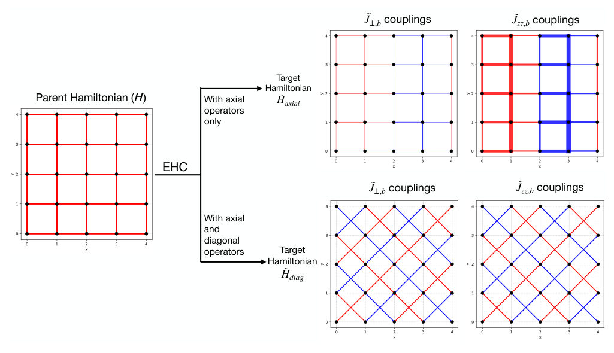
<figcaption class="paper-figure-caption"><b>Fig 1.</b> FIG. 1. Visual representation of the couplings of the parent and target Hamiltonians: This figure illustrates the construction of distinct two-dimensional target Hamiltonians obtained from a common parent Hamiltonian using the eigenstate- to-Hamiltonian construction approach. The parent Hamiltonian, H is the spin-1/2 XXZ model with antiferromagnetic spin-flip and spin preserving couplings of unit magnitude (shown as red bonds) between nearest-neighbor (NN) spins and no couplings along the next-nearest-neighbor (NNN) bonds. Applying EHC with only axial (NN) operators yields the target Hamiltonian ˜Haxial where the couplings ˜J⊥,b and ˜Jzz,b, exhibit a characteristic (π/2, 0) ordering in...</figcaption>
</figure>
<figure class="paper-figure-card">
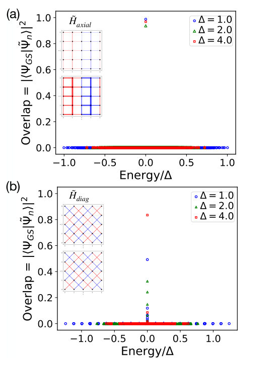
<figcaption class="paper-figure-caption"><b>Fig 2.</b> FIG. 2. Robustness of the EHC mapping. Study of the overlap of the ground state of parent Hamiltonian with all the eigenstates of the EHC built target Hamiltonians computed with exact diagonalization method. (a) For ˜Haxial, the overlap is negligible for most eigenstates except for a single eigenstate located in the middle of the spectrum for which the overlap approaches unity. This is independent of the value of ∆. (b) For ˜Hdiag, the overlap is negligible for almost all eigenstates except for few eigenstates located in the middle of the spec- trum. With increasing ∆, the maximum overlap approaches unity.</figcaption>
</figure>
<figure class="paper-figure-card">
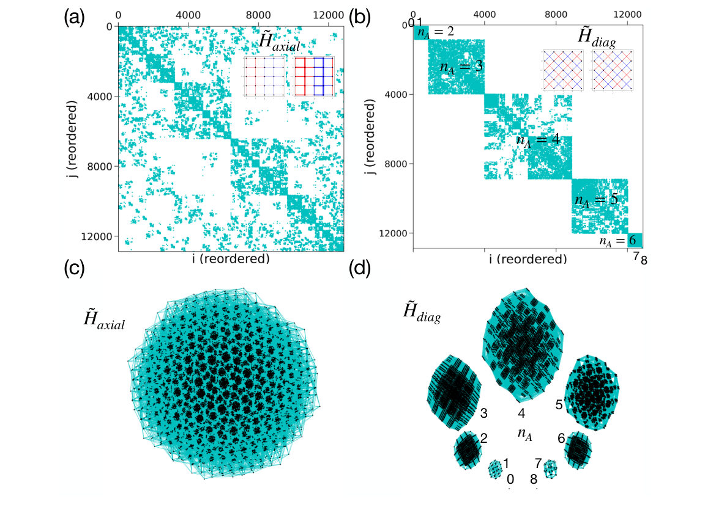
<figcaption class="paper-figure-caption"><b>Fig 3.</b> FIG. 3. Matrix structure and Hilbert-space connectivity of target Hamiltonians. The figure illustrates the structure of the adjacency matrix and network representations of the EHC-engineered Hamiltonians ˜Haxial, and ˜Hdiag. This is independent of the value of the anisotropy parameter ∆. (a) Sparse matrix representation of the adjacency matrix of ˜Haxial in the reordered basis obtained from the Hilbert-space connectivity graph. The Hamiltonian forms a single block, indicating that all basis states are mutually connected. (b) Sparse matrix representation of the adjacency matrix of ˜Hdiag in the reordered basis, which decomposes into nine disconnected blocks, corresponding to nA = 0, . . . ,...</figcaption>
</figure>
<figure class="paper-figure-card">
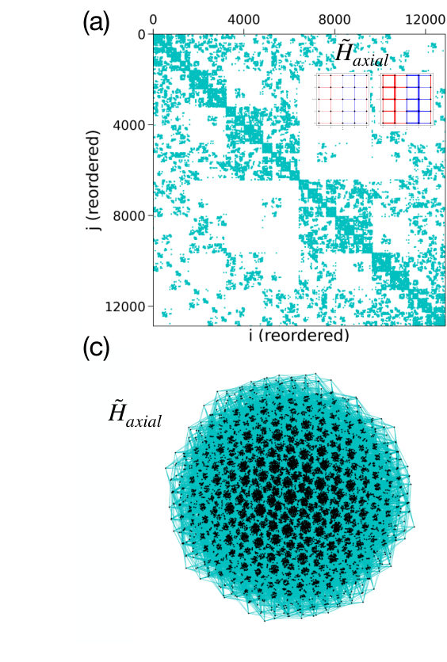
<figcaption class="paper-figure-caption"><b>Fig 4.</b> Fig. 2(a), shows the overlap values across the spec- trum of ˜Haxial for different values of the anisotropy pa- rameter ∆. It reveals that |ΨGS⟩has negligible over- lap with almost all eigenstates of ˜Haxial, except for a single eigenstate located in the middle of the spectrum. The overlap magnitude for this mid-spectrum state ap- proches unity. This indicates that the EHC procedure produces an almost exact mapping between the parent Hamiltonian ground state and a single excited eigenstate of ˜Haxial. Moreover, we observe that ∆has negligible effect in this case. In contrast, Fig. 2(b) displays the corresponding over-</figcaption>
</figure>
<figure class="paper-figure-card">
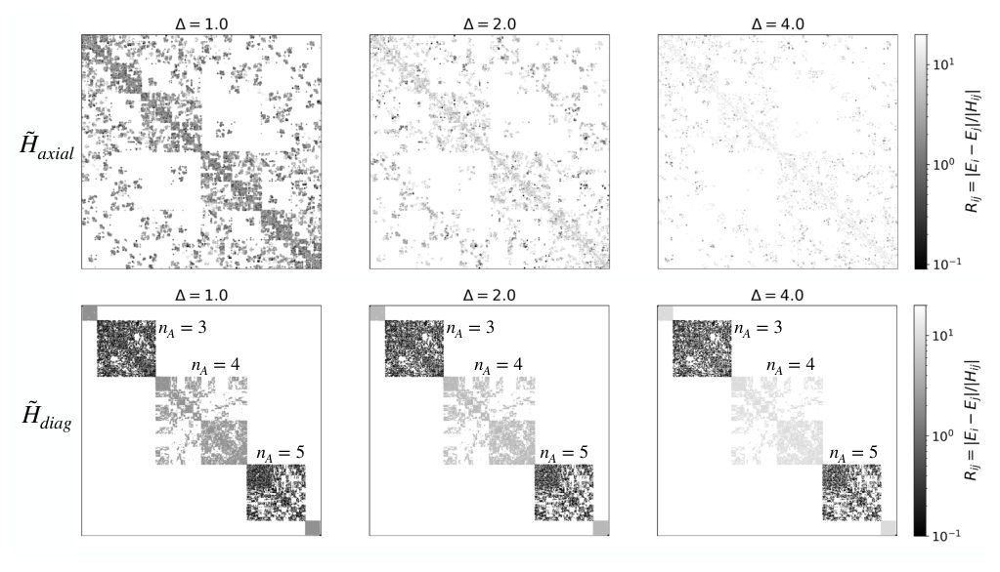
<figcaption class="paper-figure-caption"><b>Fig 5.</b> FIG. 4. Anisotropy-driven evolution of resonance structure for target Hamiltonians. Resonance matrix structure of the EHC-engineered Hamiltonians ˜Haxial and ˜Hdiag with increasing anisotropy ∆. The matrix elements are characterized by the dimensionless resonance parameter Rij = |Ei −Ej|/|Hij|, with the gray color scale indicating the degree of resonance, Rij &lt; 1 indicates resonant (dark) and Rij ≥1 indicates off-resonant (light). ˜Haxial forms a single connected block with a clear evolution with ∆. At large anisotropy, ∆= 4, resonant links are sparse, indicating suppressed hybridization and non-ergodic tendencies. In contrast, ˜Hdiag displays a fragmented structure for all ∆. The resonance...</figcaption>
</figure>
</div>

<p><strong>Summary.</strong> This paper introduces a systematic method, Eigenstate-to-Hamiltonian Construction (EHC), to engineer non-ergodic quantum dynamics in 2D spin systems. By constructing two Hamiltonians based on different interaction geometries (axial vs. diagonal), the authors show that the lattice structure directly controls the system's dynamics, leading to phenomena like Hilbert-space fragmentation and quantum scars.</p>
<p><strong>Why it may be interesting.</strong> This work provides a powerful, systematic theoretical tool (EHC) to design quantum models exhibiting specific non-equilibrium behaviors, which is highly relevant for understanding quantum simulation and controlling coherence in engineered quantum materials.</p>
<details>
<summary>Detailed structure</summary>
<p><strong>Main problem.</strong> The paper addresses the challenge of systematically engineering non-ergodic quantum dynamics in 2D interacting quantum many-body systems, moving beyond reliance on intuition or numerical search.</p>
<p><strong>Main result.</strong> The authors successfully constructed two distinct 2D spin Hamiltonians ($  ilde{H}<em ext_diag="ext{diag">{   ext{axial}}$ and $  ilde{H}</em>$) using an eigenstate-to-Hamiltonian construction, demonstrating that the interaction geometry dictates the emergence of non-ergodic features like Hilbert-space fragmentation and quantum scars.}</p>
<p><strong>Method.</strong> The core method is the Eigenstate-to-Hamiltonian Construction (EHC), which systematically builds target Hamiltonians whose eigenstates are known, circumventing the exponential scaling of the Hilbert space dimension.</p>
<p><strong>Model / system.</strong> The study focuses on spin-1/2 XXZ models on a square lattice in two dimensions. Two target Hamiltonians are constructed: one ($ ilde{H}<em ext_diag="ext{diag">{   ext{axial}}$) using only nearest-neighbor (axial) couplings, and another ($   ilde{H}</em>$) incorporating diagonal (next-nearest-neighbor) couplings.}</p>
<p><strong>Key observables.</strong> Hilbert-space fragmentation, quantum many-body scar signatures (low-entanglement, highly localized eigenstates), and the crossover between ergodic and non-ergodic dynamics.</p>
<p><strong>Important parameters / regimes.</strong> Anisotropy ($\Delta$), interaction geometry (axial vs. diagonal), and the coupling strengths ($   ilde{J}^\perp_{b},  ilde{J}^{zz}_{b}$).</p>
<p><strong>Assumptions / limitations.</strong> The primary assumption is that the EHC method provides a systematic route to designing Hamiltonians with specific dynamical properties, particularly in 2D systems.</p>
<p><strong>Figures summary.</strong> Figure 1 visually illustrates the construction process, showing the coupling patterns for the parent model and the two engineered target Hamiltonians ($   ilde{H}<em ext_diag="ext{diag">{   ext{axial}}$ and $  ilde{H}</em>$).}</p>
<p><strong>Paper structure.</strong> The paper introduces the problem of engineering non-ergodicity, details the EHC methodology, applies it to construct two geometrically distinct 2D spin Hamiltonians, and then analyzes the resulting dynamics and Hilbert-space structure for both models.</p>
</details>
<details>
<summary>Abstract</summary>
<p>Non-ergodic quantum many-body dynamics offers a route to persistent quantum coherence far from equilibrium, beyond the conventional expectations of thermalizing statistical mechanics. Most known examples have been identified through intuition, analogy, or numerical search, rather than by systematic Hamiltonian design. This leaves few general methods for engineering robust non-ergodic dynamics in disorder-free interacting quantum many-body systems, especially in higher dimensions where enhanced connectivity generally disfavors ergodicity breaking. Here, we use an eigenstate-to-Hamiltonian construction approach to systematically engineer two-dimensional quantum spin Hamiltonians with tunable non-ergodic properties. Starting from a common parent model and input eigenstate, we construct two target Hamiltonians on the square lattice that differ in their interaction geometry: axial versus diagonal. We show that the resulting interaction geometry and coupling pattern control the Hilbert-space structure and dynamics. The axial model forms a connected Hilbert-space network and exhibits an anisotropy-driven crossover from ergodic to non-ergodic behavior through the suppression of resonances. In contrast, the diagonal model exhibits Hilbert-space fragmentation and, within its largest irreducible sector, signatures of quantum many-body scar dynamics including towers of highly localized, low-entanglement eigenstates, and long-lived coherent revivals. These results establish a direct link between Hamiltonian design, Hilbert-space network structure, and emergent non-ergodic dynamics.</p>
</details>
<p><sub><a href="#top">↑ back to top</a></sub></p>

<p><a id="paper-2610.00667"></a></p>
<h3 id="operator-language-feynman-rules-for-driven-dissipative-quantum-systems-from-mean-field-to-non-gaussian-photon-correlations"><a href="http://arxiv.org/abs/2610.00667v1">Operator-language Feynman rules for driven-dissipative quantum systems: from mean field to non-Gaussian photon correlations</a></h3>
<p><strong>Authors:</strong> Peter Ehlers, Phi Hung Nguyen, Daniel Soh<br>
<strong>Type:</strong> theory · <strong>Category:</strong> other · <strong>PDF:</strong> <a href="https://arxiv.org/pdf/2610.00667v1">https://arxiv.org/pdf/2610.00667v1</a><br>
<strong>Analysis basis:</strong> full PDF text, analyzed in chunks
<strong>Topic relevance:</strong> 🔥 <code>Keldysh / 2PI / non-Gaussian methods</code> <strong>4/5</strong> · 🔥 <code>methods for driven-dissipative</code> <strong>4/5</strong> · <code>Full counting statistics</code> <strong>3/5</strong> · <code>Tavis-Cummings &amp; cavity-many-emitter</code> <strong>3/5</strong> · <code>correlated / nonlocal dissipation</code> <strong>3/5</strong> · <code>driven-dissipative phase transition</code> <strong>3/5</strong> · <code>non-equilibrium universality</code> <strong>2/5</strong> · <code>analog quantum simulation</code> <strong>1/5</strong> · <code>interference shaping light</code> <strong>1/5</strong> · <code>quantum measurements</code> <strong>1/5</strong></p>
<div class="figure-strip-hint">↔ Scroll figures horizontally</div>
<div class="paper-figures-scroll">
<figure class="paper-figure-card">
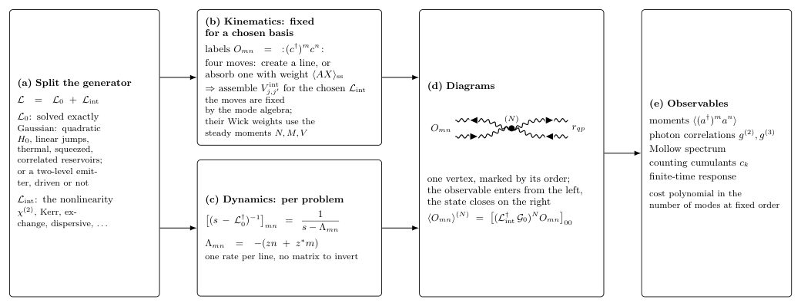
<figcaption class="paper-figure-caption"><b>Fig 1.</b> FIG. 1. The construction in one picture. (a) A Lindbladian is split into a Gaussian part L0, diagonalized exactly in Sec. III, and a nonlinear remainder Lint. (b) Once the eigenoperator basis and its steady covariance are chosen, every interaction acts through four elementary moves whose Wick-basis weights are steady-state contractions. The move algebra is fixed by the mode algebra, while the vertex table for a specified Lint is assembled mechanically from those moves (Sec. IV B). (c) The dynamics enters only through the resolvent of L0, a scalar on every label and, for Gaussian L0, a sum of one rate per line (Sec. IV C). (d) Each order of perturbation theory is a single-vertex diagram...</figcaption>
</figure>
<figure class="paper-figure-card">
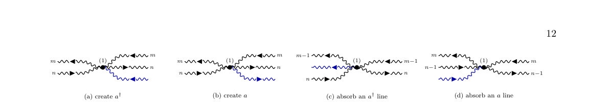
<figcaption class="paper-figure-caption"><b>Fig 2.</b> FIG. 3. The four elementary moves, drawn as first-order diagrams. Left arrows are factors of a† (or β†), right arrows factors of a (or β); the labels give the number of lines in each bundle, and the line that is created or absorbed is shown in colour. (a),(b) A mode operator creates its own line, with weight one. (c),(d) It absorbs one existing line. The weight of an absorption is the steady-state contraction of the incoming operator A with the absorbed one X, taken in the order in which they stand: ⟨AX⟩ss when A multiplies from the left and ⟨XA⟩ss when it multiplies from the right, times the number of lines of that kind; for one mode these are N, N + 1, M, and M ∗, Eqs. (54)–(57). In...</figcaption>
</figure>
<figure class="paper-figure-card">
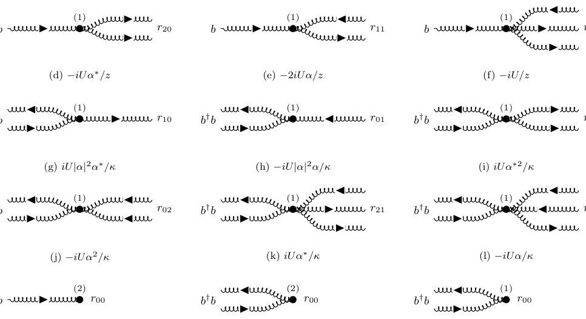
<figcaption class="paper-figure-caption"><b>Fig 3.</b> FIG. 4. Diagrams for the driven Kerr cavity, each labelled by its value and by the initial-state term rqp its outgoing lines close on. (a)–(f) The complete first-order table for the observable b, from Eq. (91). (g)–(l) The complete first-order table for b†b, Eq. (93). (m),(n) Second-order steady-state diagrams for ⟨b⟩and ⟨b†b⟩, obtained by gluing the first-order tables, Eqs. (103) and (97). (o) The first-order steady-state diagram for ⟨b†b⟩vanishes. In the steady state only (a), (m), (n), and (o) contribute; at finite time every panel does, weighted by Tr[Opqρ0].</figcaption>
</figure>
<figure class="paper-figure-card">
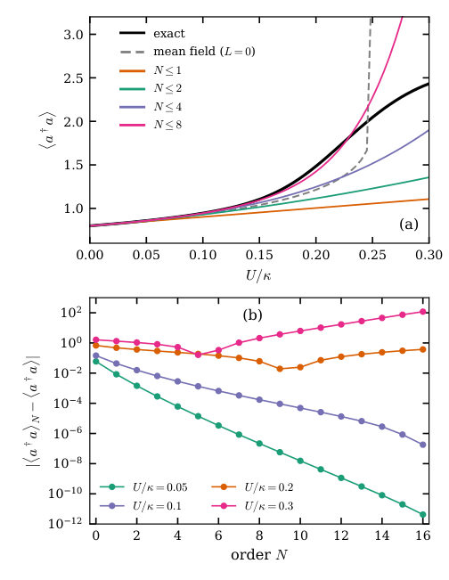
<figcaption class="paper-figure-caption"><b>Fig 4.</b> FIG. 5. Driven Kerr cavity beyond second order, for ∆c = −κ and η = κ, so that |α|2 = 0.8. (a) Intracavity photon num- ber versus U: exact steady state (black), mean-field theory, which is the sum of all L = 0 contributions (grey dashed), and partial sums of the diagrammatic series through order N. (b) Absolute error of the partial sums versus order N. The series is asymptotic: the error decreases to a minimum at an order that shrinks as U grows and increases beyond it. At U = 0.05κ and 0.1κ the error is still decreasing at N = 16.</figcaption>
</figure>
<figure class="paper-figure-card">
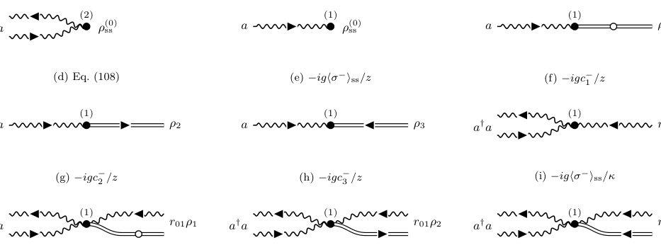
<figcaption class="paper-figure-caption"><b>Fig 5.</b> FIG. 6. Diagrams for a driven emitter in a cavity, Eq. (105). (a)–(c) Bare split: steady-state diagrams for the emitter population at orders 2, 4, and 2r, which form the geometric series of Eq. (106); for a classical dipole all diagrams beyond second order vanish. (d) Dressed split: the second-order steady-state diagram for the photon number, Eq. (108). (e)–(h) First-order table for the cavity field a: the emitter operator left at the vertex is either replaced by its steady-state mean (e) or starts one of the three dressed lines (f)–(h), which close on the duals ρk. (i)–(l) First-order table for a†a, routes through σ−; the routes through σ+ are their Hermitian conjugates. Gluing (i) to the...</figcaption>
</figure>
</div>

<p><strong>Summary.</strong> This paper introduces a novel, operator-language Feynman rule set for analyzing driven-dissipative quantum systems governed by Lindblad master equations. By systematically separating the generator into a solvable part and an interaction part, it allows for diagrammatic calculation of correlation functions. This method is particularly valuable for accurately determining non-Gaussian statistics in complex quantum optical setups.</p>
<p><strong>Why it may be interesting.</strong> This work provides a powerful, systematic, and diagrammatic framework for calculating higher-order correlations in open quantum systems, moving beyond the limitations of mean-field or Gaussian approximations.</p>
<details>
<summary>Detailed structure</summary>
<p><strong>Main problem.</strong> The paper develops a systematic, diagrammatic perturbation theory to construct Feynman rules for Lindblad master equations governing driven-dissipative quantum systems.</p>
<p><strong>Main result.</strong> The rules successfully calculate non-Gaussian photon correlations (like $g^{(3)}$) in systems like Kerr rings, surpassing the accuracy of standard Gaussian cumulant closures.</p>
<p><strong>Method.</strong> The method constructs rules by splitting the Liouvillian generator $L = L_0 + L_{	ext{int}}$, separating the expansion into a kinematic part (algebraic contractions) and a dynamical part (the resolvent of the solvable unperturbed generator $L_0$).</p>
<p><strong>Model / system.</strong> The theory applies to open quantum systems described by Lindblad master equations, covering diverse models such as driven Kerr cavities, strongly driven two-level atoms, and coupled Kerr chains/rings.</p>
<p><strong>Key observables.</strong> Photon correlations ($g^{(2)}, g^{(3)}$), photon-counting cumulants, and steady-state expectation values.</p>
<p><strong>Important parameters / regimes.</strong> Coupling strengths ($U, \kappa$), detunings ($\Delta$), and the order of the perturbative expansion.</p>
<p><strong>Assumptions / limitations.</strong> The method assumes the existence of an exactly solvable, Gaussian unperturbed generator $L_0$ whose resolvent can be calculated in closed form.</p>
<p><strong>Figures summary.</strong> Figures illustrate the construction process, showing the splitting of the generator, the kinematic rules, and the resulting diagrammatic structure used to calculate observables.</p>
<p><strong>Paper structure.</strong> The paper builds the formalism by defining the operator language for the Liouvillian, detailing the separation into kinematic and dynamic parts, and then applies these rules to calculate specific observables for various physical models, comparing results against known limits and closures.</p>
</details>
<details>
<summary>Abstract</summary>
<p>We construct Feynman rules for Lindblad master equations in the operator language of quantum optics: a fixed algebra of elementary operator moves and closed-form propagators for perturbation theory about an exactly solvable, in most cases Gaussian, generator. The expansion separates into a kinematic part (the shift algebra on the Wick-ordered eigenoperators $O_{mn}=:(c^\dagger)^m c^n:$, from which the vertex table for a specified interaction is assembled) and a dynamical part that enters only through the resolvent of the unperturbed generator, diagonal and additive for any stable, diagonalizable Gaussian $L_0$, including thermal and squeezed reservoirs and correlated decay, and equally available for a two-level emitter, driven or undriven. In the driven Kerr cavity the loop expansion is the semiclassical expansion and the series is asymptotic. In a strongly driven two-level atom, dressed lines replace a series of finite radius by one accurate deep into saturation, one line per Mollow component. For Kerr rings and chains the cost is polynomial in the number of sites at fixed perturbative order. On a three-site ring the diagrams recover the non-Gaussian part of the three-photon correlation that the Gaussian cumulant closure lacks; carried to tenth order they give the smallest $g^{(3)}$ error of the methods compared for $U\leq0.25κ$ at a cost below that of a fourth-order closure, and third- and fourth-order closures are more accurate at moderate coupling. The same rules, extended to the counting-field-tilted generator, give the photon-counting cumulants of a disordered eight-site chain beyond direct diagonalization; quantum-jump trajectories at three couplings agree with them to within $1.6$ standard errors, within one at the strongest coupling, where they place the third cumulant six standard errors above the Gaussian value.</p>
</details>
<p><sub><a href="#top">↑ back to top</a></sub></p>

<p><a id="paper-2610.00739"></a></p>
<h3 id="how-superradiance-survives-molecular-noise-inside-virus-capsids"><a href="http://arxiv.org/abs/2610.00739v1">How Superradiance Survives Molecular Noise inside Virus Capsids</a></h3>
<p><strong>Authors:</strong> Tianran Li, Irina Tsvetkova, Matthew Brauser, Amala Raj, Philip Shushkov, Bogdan Dragnea<br>
<strong>Type:</strong> both · <strong>Category:</strong> other · <strong>PDF:</strong> <a href="https://arxiv.org/pdf/2610.00739v1">https://arxiv.org/pdf/2610.00739v1</a><br>
<strong>Analysis basis:</strong> full PDF text, analyzed in chunks
<strong>Topic relevance:</strong> 🔥 <code>Dicke superradiance</code> <strong>4/5</strong> · <code>Tavis-Cummings &amp; cavity-many-emitter</code> <strong>3/5</strong> · <code>correlated / nonlocal dissipation</code> <strong>3/5</strong> · <code>superradiant laser</code> <strong>3/5</strong> · <code>analog quantum simulation</code> <strong>2/5</strong> · <code>driven-dissipative phase transition</code> <strong>2/5</strong> · <code>methods for driven-dissipative</code> <strong>2/5</strong> · <code>Keldysh / 2PI / non-Gaussian methods</code> <strong>1/5</strong> · <code>free-space correlated emission</code> <strong>1/5</strong> · <code>non-equilibrium universality</code> <strong>1/5</strong> · <code>quantum optics experiment</code> <strong>1/5</strong></p>
<div class="figure-strip-hint">↔ Scroll figures horizontally</div>
<div class="paper-figures-scroll">
<figure class="paper-figure-card">
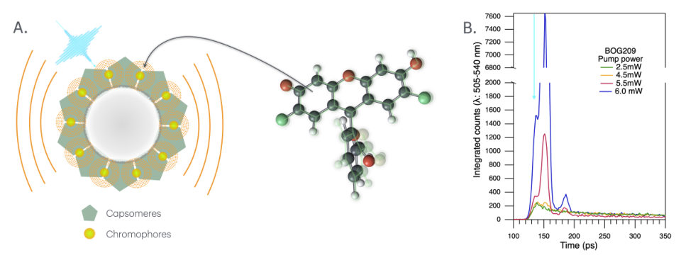
<figcaption class="paper-figure-caption"><b>Fig 1.</b> Figure 1: A. Schematic of a symmetric virus with chromophores wedged in between the oligomeric</figcaption>
</figure>
<figure class="paper-figure-card">
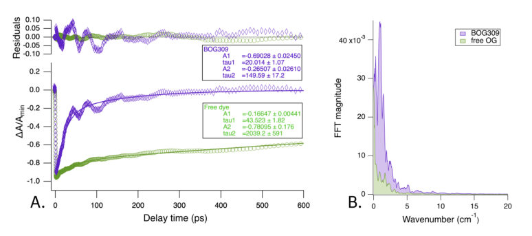
<figcaption class="paper-figure-caption"><b>Fig 2.</b> Figure 2: A. Transient absorption traces for a 70 nM solution of BOG particles carrying 𝑁≈309</figcaption>
</figure>
<figure class="paper-figure-card">
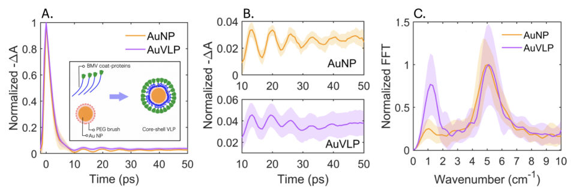
<figcaption class="paper-figure-caption"><b>Fig 3.</b> Figure 3: Probing capsid vibration via AuNP breathing mode. A. Averaged transient-absorption</figcaption>
</figure>
<figure class="paper-figure-card">
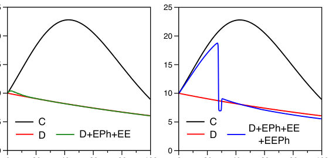
<figcaption class="paper-figure-caption"><b>Fig 4.</b> Figure 4: Vibronically assisted recovery of superradiance. Simulated emission from a 10-</figcaption>
</figure>
</div>

<p><strong>Summary.</strong> This research investigates how superradiance can persist at room temperature in dye-labeled virus capsids, a process normally hindered by molecular noise. The authors propose that coherent, underdamped capsid vibrations act as a dynamic structural element, coupling to the dye excitons to restore the necessary collective polarization for light emission. By combining TA spectroscopy and theoretical modeling, they provide evidence for this phonon-mediated mechanism.</p>
<p><strong>Why it may be interesting.</strong> This work is highly relevant to AMO physics as it models quantum coherence (SR) in a complex, open, and noisy solid-state/biological environment, using vibrational modes as the mediating coupling mechanism, which is a core topic in cavity QED and molecular physics.</p>
<details>
<summary>Detailed structure</summary>
<p><strong>Main problem.</strong> The paper addresses the fundamental mechanism enabling superradiance (SR) to occur at room temperature despite significant molecular noise sources like collisional dephasing.</p>
<p><strong>Main result.</strong> The authors find that underdamped, low-frequency collective vibrations (phonons) of the virus capsid are necessary to dynamically modulate the exciton-exciton interaction, thereby promoting the collective polarization required for SR.</p>
<p><strong>Method.</strong> The study combines ultrafast spectroscopy (Transient Absorption) experiments on dye-labeled virus capsids with theoretical modeling of coupled quantum oscillators.</p>
<p><strong>Model / system.</strong> The system involves excited organic dyes chemically bound to an icosahedral virus shell (BOGs). The model treats the dye excitation as coupled to the collective, low-frequency vibrational modes of the capsid, which act as a dynamic environment.</p>
<p><strong>Key observables.</strong> Superradiant emission intensity, oscillatory modulation in TA residuals, and the detection of low-frequency vibrational peaks ($\approx 1.3 	ext{ cm}^{-1}$).</p>
<p><strong>Important parameters / regimes.</strong> Room temperature, underdamped frequency ($\approx 1 	ext{ cm}^{-1}$), and the coupling strength between the dye excitons and the capsid motion.</p>
<p><strong>Assumptions / limitations.</strong> The analysis assumes that the observed low-frequency modes are acoustic-like, underdamped phonons, and that SR recovery requires modulation of the exciton-exciton interaction, not just individual site energies.</p>
<p><strong>Figures summary.</strong> Figure 1 shows the SR emission profile. Figure 2 shows oscillatory modulation in TA residuals for BOGs. Figure 3 shows the detection of a low-frequency peak ($\approx 1.3 	ext{ cm}^{-1}$) in AuVLP TA traces. Figure 4 simulates that SR only reappears when the vibration modulates the exciton-exciton interaction.</p>
<p><strong>Paper structure.</strong> The paper establishes the problem (SR at room temperature), presents experimental evidence for low-frequency oscillations in BOGs and AuVLPs, and concludes with theoretical modeling demonstrating that these coherent vibrations are the active ingredient promoting the necessary collective polarization for SR.</p>
</details>
<details>
<summary>Abstract</summary>
<p>Excited organic dyes chemically bound to an icosahedral virus shell can spontaneously synchronize and emit a superradiant burst of light. The mechanism that allows it to occur at room temperature, despite collisional dephasing and inhomogeneous broadening, is not understood. Few other known low-dimensional condensed matter systems exhibit room-temperature superradiance (SR). In the fluctuation-prone environment of molecular-based systems, electron--vibrational coupling has been proposed to play a central role. Here, we addressed experimentally the existence of underdamped virus capsid phonon-like modes and theoretically their involvement in the transition from uncorrelated to cooperative emission. We find that SR-active dye-labeled capsids exhibit underdamped low-frequency oscillations that modulate the dye excited-state response, and modeling shows how such capsid motion can promote the collective polarization required for superradiant emission.</p>
</details>
<p><sub><a href="#top">↑ back to top</a></sub></p>

<p><a id="paper-2610.01538"></a></p>
<h3 id="efficient-learning-of-quantum-interactions-from-thermal-metastable-states"><a href="http://arxiv.org/abs/2610.01538v1">Efficient learning of quantum interactions from thermal metastable states</a></h3>
<p><strong>Authors:</strong> Bingrun Wang, Qi Ye, Chi-Fang Chen<br>
<strong>Type:</strong> theory · <strong>Category:</strong> statistical mechanics · <strong>PDF:</strong> <a href="https://arxiv.org/pdf/2610.01538v1">https://arxiv.org/pdf/2610.01538v1</a><br>
<strong>Analysis basis:</strong> full PDF text, analyzed in chunks
<strong>Topic relevance:</strong> 🔥 <code>methods for driven-dissipative</code> <strong>4/5</strong> · <code>analog quantum simulation</code> <strong>3/5</strong> · <code>driven-dissipative phase transition</code> <strong>3/5</strong> · <code>non-equilibrium universality</code> <strong>3/5</strong> · <code>scars &amp; prethermalization</code> <strong>3/5</strong> · <code>Keldysh / 2PI / non-Gaussian methods</code> <strong>2/5</strong> · <code>correlated / nonlocal dissipation</code> <strong>2/5</strong> · <code>quantum measurements</code> <strong>2/5</strong></p>
<div class="figure-strip-hint">↔ Scroll figures horizontally</div>
<div class="paper-figures-scroll">
<figure class="paper-figure-card">
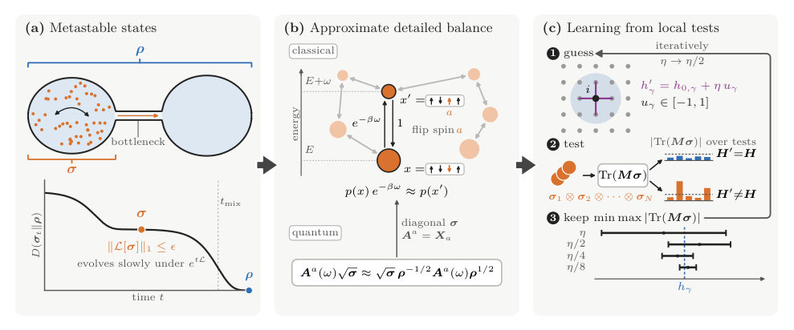
<figcaption class="paper-figure-caption"><b>Fig 1.</b> Figure 1: Overview of the results. (a) In this example, a metastable state σ is concentrated in one region of configuration space, whereas the Gibbs state ρ spreads over all of it. Probability leaks out of that region only slowly, so σ is approximately stationary under the Lindbladian evolution, ∥L[σ]∥1 ≤ϵ, yet still far from equilibrium (the plateau of D(σt∥ρ)). (b) Metastability implies approximate detailed balance (ADB). Classically, if configurations x and x′ differ by one spin flip and their energies differ by ω, the probability fluxes between them balance, p(x)e−βω ≈p(x′). ADB is the quantum version for single-site jumps Aa, and it reduces to this classical relation when σ is diagonal...</figcaption>
</figure>
<figure class="paper-figure-card">
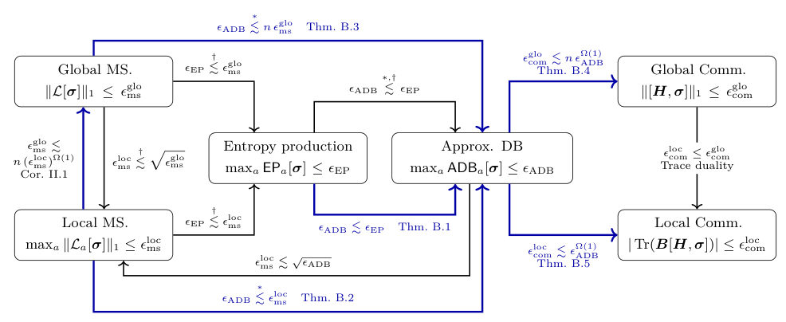
<figcaption class="paper-figure-caption"><b>Fig 2.</b> Figure 2: Relations between metastability (MS), entropy production (EP), approximate detailed balance (ADB), and commutation with the Hamiltonian (Comm.). Black arrows are results from Ref. [36] or direct consequences, and blue arrows are our results. At fixed temperature and local parameters, ≲suppresses constants, and Ω(1) denotes a positive exponent. Asterisks (∗) mark bounds that hold up to additional factors polylogarithmic in the inverse error. Daggers (†) mark additional ∥log σ −log ρ∥dependence, which requires full-rank states. For Local Comm., B is a norm-one local operator. Our ADB-to-local-commutation bound extends this class to products of a fixed number of local operators...</figcaption>
</figure>
<figure class="paper-figure-card">
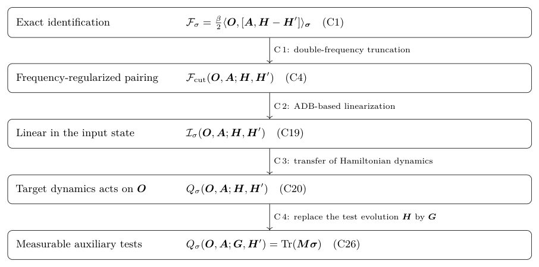
<figcaption class="paper-figure-caption"><b>Fig 3.</b> Figure 3: Construction of the measurable tests from the identifiability equation (C3). The first three steps produce the expression with true auxiliary dynamics. The fourth defines the family with selectable dynamics. ADB-based linearization is the main technical step.</figcaption>
</figure>
</div>

<p><strong>Summary.</strong> This paper develops a general framework for learning quantum interactions from metastable states rather than requiring the computationally intractable exact Gibbs states. By exploiting the concept of Approximate Detailed Balance, the authors extend existing efficient learning protocols to these realistic, non-equilibrium inputs. This provides a powerful, unified method for characterizing complex quantum dynamics from limited measurements.</p>
<p><strong>Why it may be interesting.</strong> This work is highly relevant as it provides a robust theoretical tool for characterizing and learning the dynamics of complex, non-equilibrium quantum systems, which are common in open quantum systems and thermalization studies.</p>
<details>
<summary>Detailed structure</summary>
<p><strong>Main problem.</strong> The central task is learning the unknown quantum interactions (Hamiltonian) governing a many-body system from measurements taken on finite-temperature, non-equilibrium metastable states.</p>
<p><strong>Main result.</strong> The authors establish a unified framework showing that the Hamiltonian can be learned from metastable states using the same efficient protocols developed for true Gibbs states, achieving near-optimal complexity.</p>
<p><strong>Method.</strong> The approach extends established Gibbs-state learning protocols to metastable states by leveraging the concept of Approximate Detailed Balance (ADB). It uses local measurements on these metastable states to iteratively estimate Hamiltonian coefficients.</p>
<p><strong>Model / system.</strong> The system is an $n$-qubit lattice governed by a Hamiltonian $H$ and evolves under a Lindbladian master equation $L[\sigma]$. The input data consists of $\epsilon$-metastable states $\sigma$, which are approximate stationary points ($\|L[\sigma]\|_1 \le \epsilon$) but not necessarily the true Gibbs state.</p>
<p><strong>Key observables.</strong> Hamiltonian coefficients ($h_\gamma$), expectation values $    ext{Tr}(M_\sigma)$, and the degree of non-equilibrium ($|L[\sigma]|_1$).</p>
<p><strong>Important parameters / regimes.</strong> Inverse temperature ($eta$), metastability error ($\epsilon$), and desired estimation precision ($\eta$).</p>
<p><strong>Assumptions / limitations.</strong> The system dynamics are modeled by a weak-coupling, time-Markovian Lindbladian, and the input states are sufficiently metastable to exhibit Approximate Detailed Balance (ADB).</p>
<p><strong>Figures summary.</strong> Figure 1 illustrates that a metastable state can be far from equilibrium but still approximately stationary, demonstrating that metastability implies Approximate Detailed Balance (ADB), which underpins the iterative learning algorithm.</p>
<p><strong>Paper structure.</strong> The paper develops the theory by first defining the problem in terms of metastable states, then extending the known Gibbs-state learning mechanisms to this new input class, and finally deriving the complexity bounds for the estimation process.</p>
</details>
<details>
<summary>Abstract</summary>
<p>Learning quantum interactions from finite-temperature many-body systems is a central task in emerging quantum platforms. Recently, the problem of learning from lattice quantum Gibbs states has found rigorous, efficient protocols. Nevertheless, exact Gibbs states, as the input premise, are in fact computationally intractable to prepare and may not faithfully represent generic finite-temperature quantum systems. In contrast, a system coupled to a heat bath can be stuck at an approximate stationary state (metastable state) long before it truly equilibrates. Here, we formulate a physically and algorithmically consistent alternative: learning from such metastable states of detailed-balanced master equations (Lindbladians) arising from system-bath interactions. We distill the algorithmic mechanism and structural condition underlying Gibbs-state learning and extend it in full to metastable states, attaining nearly optimal sample and computational complexity (in the system size and the precision). More broadly, we sharpen notions of metastability and develop a unified framework for finite-temperature learning.</p>
</details>
<p><sub><a href="#top">↑ back to top</a></sub></p>

<p><a id="paper-2610.01094"></a></p>
<h3 id="quantum-synchronization-in-atom-cavity-coupled-systems"><a href="http://arxiv.org/abs/2610.01094v1">Quantum synchronization in atom-cavity coupled systems</a></h3>
<p><strong>Authors:</strong> Katha Haldar, Anushree Dey, Saikat Ghosh, Bimalendu Deb<br>
<strong>Type:</strong> theory · <strong>Category:</strong> other · <strong>PDF:</strong> <a href="https://arxiv.org/pdf/2610.01094v1">https://arxiv.org/pdf/2610.01094v1</a><br>
<strong>Analysis basis:</strong> full PDF text, analyzed in chunks
<strong>Topic relevance:</strong> 🔥 <code>driven-dissipative phase transition</code> <strong>4/5</strong> · <code>Tavis-Cummings &amp; cavity-many-emitter</code> <strong>3/5</strong> · <code>analog quantum simulation</code> <strong>3/5</strong> · <code>methods for driven-dissipative</code> <strong>3/5</strong> · <code>non-equilibrium universality</code> <strong>3/5</strong> · <code>correlated / nonlocal dissipation</code> <strong>2/5</strong> · <code>Keldysh / 2PI / non-Gaussian methods</code> <strong>1/5</strong> · <code>quantum measurements</code> <strong>1/5</strong></p>
<div class="figure-strip-hint">↔ Scroll figures horizontally</div>
<div class="paper-figures-scroll">
<figure class="paper-figure-card">
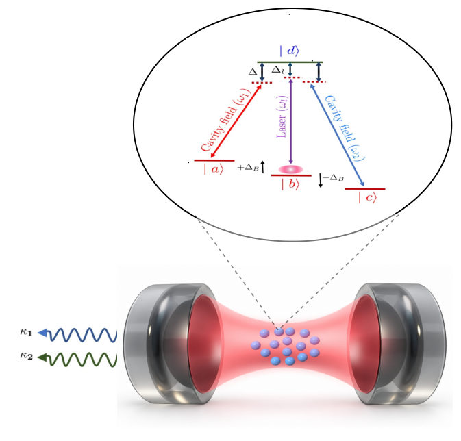
<figcaption class="paper-figure-caption"><b>Fig 1.</b> FIG. 1. A schematic diagram showing an ensemble of atoms in a bimodal cavity, κ1 and κ2 are the two cavity decay rates. Inset shows a single four-level atom interacting with two cavity modes and a laser field. The levels | a⟩, | b⟩and | c⟩denote three ground-state magnetic sub-levels which are split due to an applied magnetic field. The cavity modes 1 and 2 couple the levels | a⟩and | c⟩to the excited level | d⟩, respectively; while the transition | b⟩→| d⟩is driven by a laser field.</figcaption>
</figure>
<figure class="paper-figure-card">
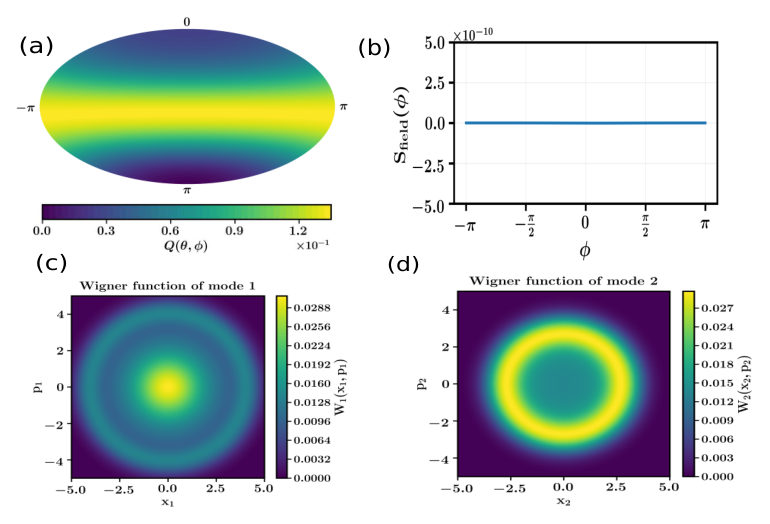
<figcaption class="paper-figure-caption"><b>Fig 2.</b> FIG. 2. (a) Plotted is Qfield(θ, ϕ) for no cavity drives i.e. Ω1 = Ω2 = 0, Ω= 0.45Γd κ1 = κ2 = 10−4Γd, g1 = g2 = 0.5Γd, ∆d = 100Γd, ∆a = 0.01Γd, ∆c = −0.01Γd, δ1 = −0.001, δ2 = 0.001 and γ1 = γ2 = 1 × 10−2Γd and the subplot (b) shows the corresponding Sfield. Subplots (a) and (b) reveal a cavity-field limit cycle. Subplots (c) and (d) show the Wigner quasiprobability distributions W1(x1, p1) and W2(x2, p2) of the cavity field mode 1 and mode 2, respectively. The finite-radius annular Wigner distributions centered away from the vacuum point confirm the existence of nonzero cavity-field amplitudes with phase diffusion as a characteristic feature of a limit cycle. The conditions ⟨ˆa1⟩= ⟨ˆa2⟩=...</figcaption>
</figure>
<figure class="paper-figure-card">
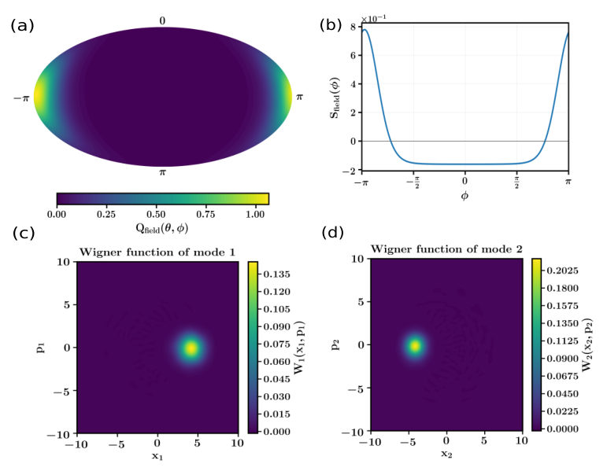
<figcaption class="paper-figure-caption"><b>Fig 3.</b> FIG. 3. Qfield (a) and Wigner distributions (c,d) for Ω1 = Ω2 = 0.005Γd, with all other parameters remaining fixed as in Fig. 2. Subplot (b) shows the corresponding Sfield(ϕ). Subplots (c) and (d) display W1(x1, p1) and W2(x2, p2), respectively. The phase localization in (a) along with the crescent-shaped W1(x1, p1) and W2(x2, p2) in (c) and (d), indicates that the cavity drives force the system to select a definite phase by distorting the phase-diffused limit cycle, leading to the emergence of an out-of-phase two-mode synchronized field state. Here ⟨ˆa† 1ˆa1⟩= 9.07, ⟨ˆa† 2ˆa2⟩= 8.97, ⟨ˆa1⟩= 2.90 −0.10i and ⟨ˆa2⟩= −2.93 −0.14i.</figcaption>
</figure>
<figure class="paper-figure-card">
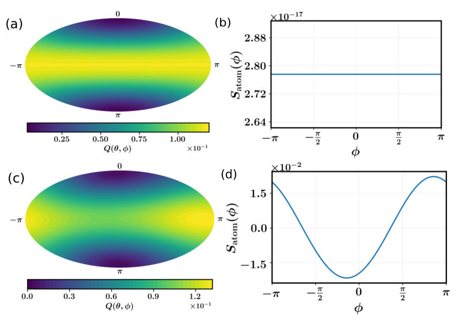
<figcaption class="paper-figure-caption"><b>Fig 4.</b> FIG. 4. Atomic Husimi-Q distribution (a,c) and the corresponding Satom (b,d) for Ω= 0.45Γd, κ1 = κ2 = 10−4Γd, g1 = g2 = 0.5Γd, ∆d = 100Γd and γ1 = γ2 = 1 × 10−2Γd. Subplots (a) and (b) correspond to the no cavity-drive case, Ω1 = Ω2 = 0, where Q(θ, ϕ) remains nearly phase-independent and the corresponding Satom(ϕ) is essentially flat, indicating a limit-cycle. Subplots (c) and (d) correspond to finite cavity drives, Ω1 = Ω2 = 0.005Γd, where the atomic phase-space distribution becomes localized and the corresponding Satom develops pronounced structure with enhanced weight near ϕ = ±π, demonstrating the emergence of atomic out-of-phase synchronization. The results displayed in this and the...</figcaption>
</figure>
<figure class="paper-figure-card">
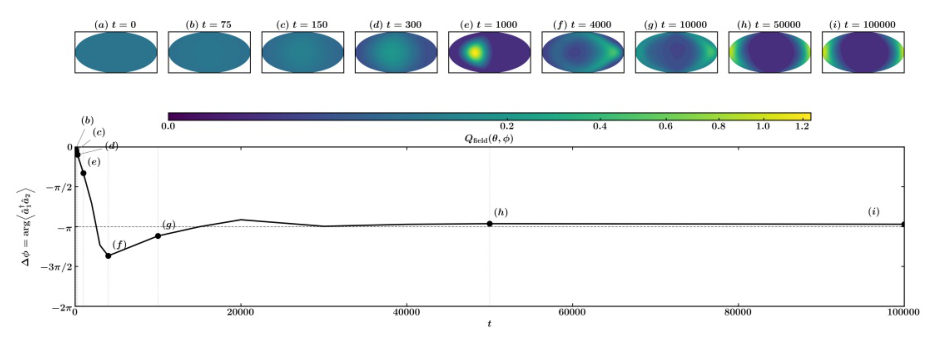
<figcaption class="paper-figure-caption"><b>Fig 5.</b> FIG. 5. Dynamical development of relative-phase locking in the two-mode field. The upper panels show the two-mode field Husimi-Q distribution Qfield(θ, ϕ; t) at representative evolution times. The lower panel shows the relative phase ∆ϕ(t) = arg⟨ˆa† 1ˆa2⟩t, with the marked points corresponding to the Husimi snap- shots above.</figcaption>
</figure>
</div>

<p><strong>Summary.</strong> This paper analyzes quantum synchronization and limit-cycle dynamics in a driven atom-cavity system using two coupled cavity modes. By employing advanced quasi-probability distributions and mutual information measures, the authors characterize the interplay between field synchronization and quantum correlations. The findings highlight fundamental trade-offs in these complex quantum optical systems.</p>
<p><strong>Why it may be interesting.</strong> This work is highly relevant as it tackles emergent quantum phenomena (synchronization, limit cycles) in driven, dissipative quantum systems, providing tools to quantify quantum advantages for quantum metrology.</p>
<details>
<summary>Detailed structure</summary>
<p><strong>Main problem.</strong> The study investigates the emergence of quantum synchronization and limit-cycle behavior in complex, driven, and dissipative quantum systems.</p>
<p><strong>Main result.</strong> The research reveals that field synchronization and Wehrl mutual information are mutually exclusive, and the system can exhibit out-of-phase synchronized states when driven by weak classical fields.</p>
<p><strong>Method.</strong> The analysis employs advanced quantum diagnostic tools like the generalized two-mode field Husimi-Q function and spin-1 Husimi-Q function, alongside analyzing symmetry breaking and mutual information.</p>
<p><strong>Model / system.</strong> The system is a Cavity Quantum Electrodynamics (CQED) setup involving an ensemble of spin-1 atoms coupled to two driven cavity field modes. The dynamics are governed by a Lindblad master equation derived after adiabatically eliminating the excited atomic state.</p>
<p><strong>Key observables.</strong> Limit cycles, quantum synchronization measures ($S_{	ext{field}}(\phi)$), Wehrl mutual information ($I_W$), and coherence properties derived from Husimi-Q functions.</p>
<p><strong>Important parameters / regimes.</strong> The analysis is relevant in the strong-coupling cavity QED regime, requiring careful consideration of cavity decay rates ($\kappa_i$) relative to coupling strengths ($g_i$) and drive strengths ($\Omega_i$).</p>
<p><strong>Assumptions / limitations.</strong> The primary assumptions include using the electric-dipole and rotating wave approximations, and performing adiabatic elimination of the excited atomic state $|d\rangle$.</p>
<p><strong>Figures summary.</strong> Figure 1 schematically illustrates the CQED setup involving atoms in a bimodal cavity with specified decay rates.</p>
<p><strong>Paper structure.</strong> The paper follows a structure involving the derivation of the effective Hamiltonian via adiabatic elimination, followed by the application of quantum diagnostic tools (Husimi-Q functions, mutual information) to analyze the resulting time evolution dynamics.</p>
</details>
<details>
<summary>Abstract</summary>
<p>We consider a cavity quantum electrodynamics (CQED) setup where an ensemble of spin-1 atoms driven by a classical field interacts with two driven cavity field modes. We show that the two sub-systems - the atoms and the two-mode cavity field, exhibit limit-cycle or quantum synchronization depending on the cavity drive strengths and other system parameters. In order to visualize the limit cycle and synchronization in the field, we introduce generalized two-mode field Husimi-Q function using SU(2) coherent states. For atomic spin states, we make use of spin-1 Husimi-Q function to visualize the same. We further corroborate the occurrence of field synchronization and limit cycle by analyzing $U(1)$ symmetry breaking, Wigner quasi-probability distribution, coherence properties of reduced field density matrix. Our results reveal intriguing interplay between the limit-cycle and quantum synchronization behavior, highlighting emergent quantum phenomena in driven dissipative interacting quantum systems. Additionally, we calculate Wehrl mutual information between the two modes and find that the field synchronization and Wehrl mutual information are mutually exclusive. Our study would be important to extract quantum advantages in quantum metrology using coupled atom-cavity systems.</p>
</details>
<p><sub><a href="#top">↑ back to top</a></sub></p>

<p><a id="paper-2610.00546"></a></p>
<h3 id="generative-modeling-of-stochastic-dynamics-for-long-time-evolution"><a href="http://arxiv.org/abs/2610.00546v1">Generative Modeling of Stochastic Dynamics for Long-Time Evolution</a></h3>
<p><strong>Authors:</strong> Yang-yang Tan, Jinyang Li, Lingxiao Wang<br>
<strong>Type:</strong> both · <strong>Category:</strong> statistical mechanics · <strong>PDF:</strong> <a href="https://arxiv.org/pdf/2610.00546v1">https://arxiv.org/pdf/2610.00546v1</a><br>
<strong>Analysis basis:</strong> full PDF text, analyzed in chunks
<strong>Topic relevance:</strong> 🔥 <code>non-equilibrium universality</code> <strong>4/5</strong> · <code>driven-dissipative phase transition</code> <strong>3/5</strong> · <code>methods for driven-dissipative</code> <strong>3/5</strong> · <code>Keldysh / 2PI / non-Gaussian methods</code> <strong>2/5</strong> · <code>Frenkel-Kontorova</code> <strong>1/5</strong> · <code>analog quantum simulation</code> <strong>1/5</strong> · <code>quantum measurements</code> <strong>1/5</strong> · <code>scars &amp; prethermalization</code> <strong>1/5</strong></p>
<div class="figure-strip-hint">↔ Scroll figures horizontally</div>
<div class="paper-figures-scroll">
<figure class="paper-figure-card">
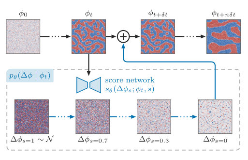
<figcaption class="paper-figure-caption"><b>Fig 1.</b> FIG. 1. Conditional transition kernel. The upper row shows the physical trajectory from ϕ0 to ϕt and onward in steps of δt. In the lower row, the present field ϕt conditions a score network that guides reverse diffusion from Gaussian noise at s = 1 to an increment ∆ϕs=0 ∼pθ(∆ϕ | ϕt). Adding this increment to ϕt yields ϕt+δt. Repeated sampling generates ϕt+nδt. The snapshots illustrate coarsening deep in the bro- ken phase.</figcaption>
</figure>
<figure class="paper-figure-card">
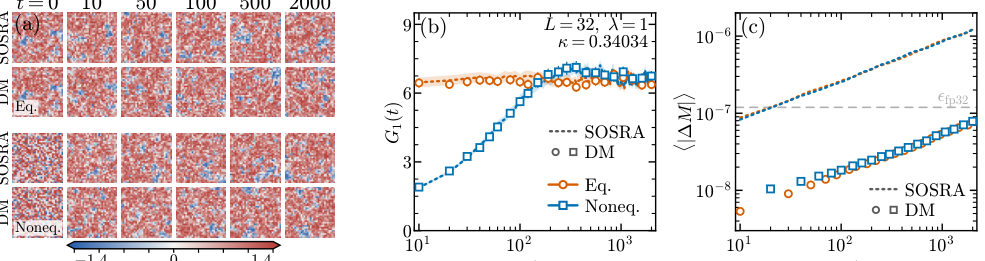
<figcaption class="paper-figure-caption"><b>Fig 2.</b> FIG. 2. Long-time prediction of the learned kernel from the diffusion model (DM) against a high-precision stochastic equation solver (SOSRA [22]) for Model B at the critical point (κ = 0.34034, λ = 1, L = 32, and δt = 10). (a) Field configurations at t = 0, 10, 50, 100, 500, and 2000 for equilibrium HMC (upper pair) and non-equilibrium Gaussian (lower pair, with the spatial mean of the paired HMC field) initial ensembles. Within each pair, SOSRA and DM are shown above and below, respectively, and start from the same field at t = 0. (b) Equal-time power G1(t) of the smallest diagonal mode. Dotted lines with bands show SOSRA, and points show DM. (c) Mean-field drift ⟨|M(t) −M(0)|⟩. Both...</figcaption>
</figure>
<figure class="paper-figure-card">
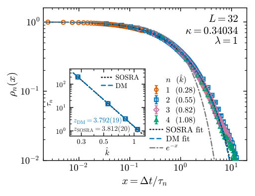
<figcaption class="paper-figure-caption"><b>Fig 3.</b> FIG. 3. Critical relaxation at κ = 0.34034, λ = 1, and L = 32. The diagonal-mode correlations collapse when plotted against x = ∆t/τn. Colored markers show the DM results, with error bars denoting standard errors. The dotted black curve and the dashed blue curve show fits of Eq. (11) to the SOSRA and DM data, respectively. The gray dash-dotted curve is e−x. The inset shows the relaxation times versus lattice momentum, yielding effective exponents z = 3.792(19) for the DM and z = 3.812(20) for SOSRA.</figcaption>
</figure>
<figure class="paper-figure-card">
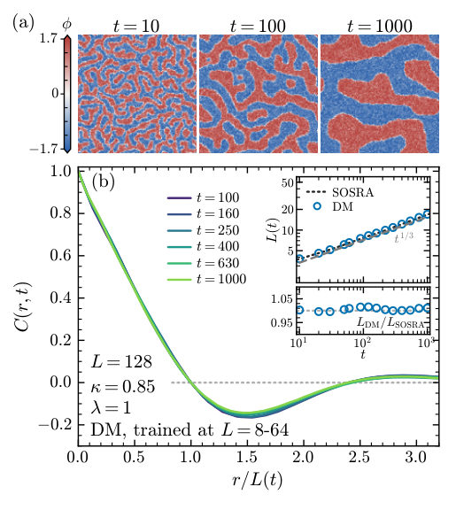
<figcaption class="paper-figure-caption"><b>Fig 4.</b> FIG. 4. Coarsening deep in the broken phase (κ = 0.85, λ = 1). The kernel was trained only on synthetic field config- urations at L ≤64 and applied at L = 128 from a disordered initial state. (a) DM configurations at t = 10, 100, and 1000. (b) Collapse of the sign-field correlation C(r, t) for t = 100– 1000. The insets compare the domain size L(t), defined by the first zero of C(r, t), with the direct SOSRA result and show their ratio. The black dotted line shows SOSRA, and blue open circles show DM. The gray dashed line denotes the t1/3 growth law. The SOSRA and DM ensembles contain 128 and 32 trajectories, respectively.</figcaption>
</figure>
<figure class="paper-figure-card">
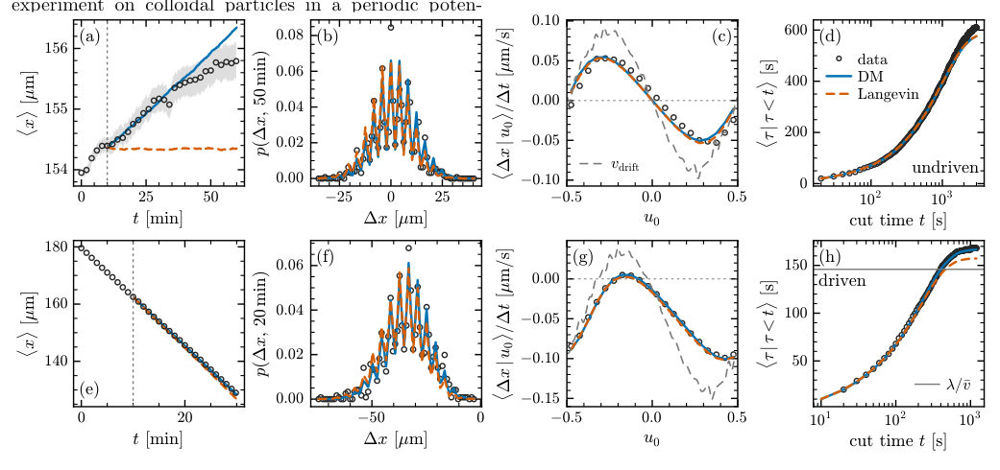
<figcaption class="paper-figure-caption"><b>Fig 5.</b> FIG. 5. DM predictions for undriven (upper row) and driven (lower row) colloidal motion in a periodic potential [29, 50]. Black circles show the experimental data. Blue solid lines show DM and orange dashed lines the Langevin reference based on Ref. [29]. (a,e) Mean position ⟨x(t)⟩. Shading shows the standard error of the mean displacement from t = 0. The dotted line at t = 10 min marks the end of training. (b,f) Distributions of the net displacement over 50 min of undriven motion and 20 min of driven motion, both measured from t = 10 min. (c,g) Mean displacement rate ⟨∆x | u0⟩/∆t at ∆t = δt = 10 s as a function of the initial phase u0. Gray dashed lines show the instantaneous Langevin...</figcaption>
</figure>
</div>

<p><strong>Summary.</strong> This paper demonstrates that generative diffusion models can predict the long-time evolution of complex stochastic physical systems using only short-time measurements. By learning the finite-time transition kernel, the models accurately reproduce universal scaling laws observed in lattice models and predict transport properties in experimental colloidal systems. This establishes a powerful, data-driven methodology for studying non-equilibrium statistical mechanics.</p>
<p><strong>Why it may be interesting.</strong> This work provides a powerful, data-driven tool for characterizing non-equilibrium dynamics, which is crucial for understanding relaxation and phase ordering in complex quantum or classical many-body systems where analytical solutions are intractable.</p>
<details>
<summary>Detailed structure</summary>
<p><strong>Main problem.</strong> The core problem is predicting the long-time, non-equilibrium evolution of stochastic physical systems when the underlying equation of motion is unknown, using only short-time configuration data.</p>
<p><strong>Main result.</strong> Generative diffusion models successfully learn the finite-time transition kernel, allowing accurate prediction of dynamic critical scaling, coarsening dynamics, and particle transport over much longer timescales than the training data.</p>
<p><strong>Method.</strong> The authors train conditional diffusion models on pairs of configurations separated by a short time lag ($\delta t$) to learn the transition kernel, which is then iterated using the Chapman-Kolmogorov equation for long-time prediction.</p>
<p><strong>Model / system.</strong> The work tests this approach on several systems: 2D lattice models (e.g., Model B for conserved order parameters), and experimental data from driven colloidal particles in a periodic optical potential.</p>
<p><strong>Key observables.</strong> Dynamic critical exponents ($z$), coarsening exponents ($t^{1/3}$), particle current ($ar{v}$), and mean passage times.</p>
<p><strong>Important parameters / regimes.</strong> The training lag ($\delta t$) is the key input, while the prediction time can be orders of magnitude longer; the system parameters include diffusion coefficients and potential strengths.</p>
<p><strong>Assumptions / limitations.</strong> The dynamics are assumed to be autonomous, meaning the transition law depends only on the time interval $\Delta t$, not the absolute time $t$.</p>
<p><strong>Figures summary.</strong> Figures compare the long-time prediction of the learned kernel against direct simulations (SOSRA) for lattice models, showing agreement in scaling laws. Other figures compare predicted particle currents and mean-square displacements for driven colloids against experimental data.</p>
<p><strong>Paper structure.</strong> The paper develops the general framework for stochastic dynamics, applies it to lattice models to reproduce critical scaling, and then validates the method using high-precision measurements of driven colloidal particle transport.</p>
</details>
<details>
<summary>Abstract</summary>
<p>Exact stochastic equations for non-equilibrium dynamics are rarely accessible. We show that the long-time evolution of stochastic dynamics can be predicted from configuration pairs at a fixed short time lag, without knowledge of the equation of motion. Generative diffusion models learn the finite-time transition kernel from these pairs, and iterating it propagates the dynamics far beyond the training lag. For two-dimensional Model B, the diffusive dynamics of a conserved order parameter, the learned kernels reproduce dynamic critical scaling and self-similar $t^{1/3}$ coarsening. Agreement with direct simulations persists on lattices twice the largest training size and for initial ensembles absent from training. For driven colloids in a periodic optical potential, ten minutes of measured trajectories suffice to predict the particle current and mean passage time over the next twenty minutes within experimental uncertainty. Short-time observations thus contain the information needed to predict emergent non-equilibrium dynamics at much longer times.</p>
</details>
<p><sub><a href="#top">↑ back to top</a></sub></p>

<p><a id="paper-2610.01832"></a></p>
<h3 id="experimental-realization-of-wheelers-delayed-choice-experiment-with-dual-selections"><a href="http://arxiv.org/abs/2610.01832v1">Experimental realization of Wheeler's delayed-choice experiment with dual selections</a></h3>
<p><strong>Authors:</strong> Xiaowan Yang, Xinglei Yu, Liangsheng Li, Xinzhi Zhao, Tianle Zheng, Chengjie Zhang, Chuan-Feng Li, Guang-Can Guo<br>
<strong>Type:</strong> experiment · <strong>Category:</strong> other · <strong>PDF:</strong> <a href="https://arxiv.org/pdf/2610.01832v1">https://arxiv.org/pdf/2610.01832v1</a><br>
<strong>Analysis basis:</strong> full PDF text, analyzed in chunks
<strong>Topic relevance:</strong> 🔥 <code>quantum optics experiment</code> <strong>4/5</strong> · <code>interference shaping light</code> <strong>3/5</strong> · <code>quantum measurements</code> <strong>3/5</strong> · <code>analog quantum simulation</code> <strong>2/5</strong> · <code>QC/QI experiment</code> <strong>1/5</strong></p>
<div class="figure-strip-hint">↔ Scroll figures horizontally</div>
<div class="paper-figures-scroll">
<figure class="paper-figure-card">
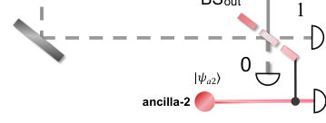
<figcaption class="paper-figure-caption"><b>Fig 1.</b> FIG. 1. A schematic diagram of a dual-selection experimental setup with a Mach-Zehnder interferometer. A tunable phase shifter φ is added to one arm of the interference loop, and both of the two beam splitters BSin and BSout can be selec- tively present or absent. The selection of BSin is controlled by the delayed-choice of measurement basis for ancilla qubit- 1 of entangled state |ψa1s⟩= (|0⟩a1|0⟩s + |1⟩a1|1⟩s)/ √</figcaption>
</figure>
<figure class="paper-figure-card">

<figcaption class="paper-figure-caption"><b>Fig 2.</b> FIG. 3. Schematic illustration of the experimental setup. Our experimental setup can be divided into three parts: the entangled photon-pair source, delayed-choice and dual selection. In the entangled photon-pair source part, the angle of H12 is 22.5◦, a photon with a wavelength of 405nm incident on a type-II PPKTP crystal produces a pair of photons with a wavelength of 810nm that are separately transported into single-mode fibers. In the delayed-choice part, H3 and polarizing beam splitter (PBS) in the dotted box comprise the measurement module, H3 has four rotation angles of 0◦, 45◦, 22.5◦and −22.5◦. In the dual-selection part, signal photon passes through quartz crystals which add phase φ...</figcaption>
</figure>
<figure class="paper-figure-card">

<figcaption class="paper-figure-caption"><b>Fig 3.</b> FIG. 4. The probabilities of measurement outcomes for varying phase φ. Purple dots represent experimental data for P (i) a , and purple solid lines are their theoretical values. Orange triangles represent experimental data for P (i) d , and orange solid lines are their theoretical values. Theoretically, P (0) a = P (1) a = P (+) d = P (−) d = 1/4, P (0) d = 0, P (1) d = 1/2, and P (±) a = (1 ± cosφ)/4. The error bars are derived from error propagation formula. (a) H3 in Figure 3 is set to 0◦, and projective measurements are performed on idler photons with outcome states being |0⟩a1. (b) H3 is set to 45◦, and projective measurements are performed on idler photons with outcome states being...</figcaption>
</figure>
</div>

<p><strong>Summary.</strong> This paper reports the experimental realization of Wheeler's delayed-choice experiment by implementing dual selections in a Mach-Zehnder interferometer using entangled photons. By independently controlling the presence of two beam splitters, the authors demonstrate that wave-like interference patterns only emerge when both components are active. The work confirms the fundamental principles of quantum superposition in measurement settings.</p>
<p><strong>Why it may be interesting.</strong> This work provides a sophisticated experimental realization of fundamental quantum concepts (delayed choice, wave-particle duality) using advanced photonic techniques, which is highly relevant to quantum optics and open quantum systems.</p>
<details>
<summary>Detailed structure</summary>
<p><strong>Main problem.</strong> The paper experimentally investigates Wheeler's delayed-choice experiment to demonstrate the wave-particle duality of single photons using a novel setup with dual selections.</p>
<p><strong>Main result.</strong> The experiment successfully shows that wave-like behavior only emerges when both beam splitters are present, and it predicts that a superposition of beam splitter presence/absence leads to a quantum superposition state.</p>
<p><strong>Method.</strong> The setup uses entangled photon pairs in a Mach-Zehnder interferometer (MZI) and implements delayed choice by controlling the measurement basis of an idler photon to determine the state of the signal photon after it has passed through the interferometer.</p>
<p><strong>Model / system.</strong> The physical platform is an MZI utilizing entangled photon pairs generated via SPDC. The system is modeled using quantum circuits involving two ancilla qubits to control the presence/absence of two beam splitters (BSin and BSout).</p>
<p><strong>Key observables.</strong> Interference visibility (V), detection probabilities ($P^{(i)}_{jk}$) in different paths (a and d), and the dependence of these probabilities on the relative phase ($\varphi$).</p>
<p><strong>Important parameters / regimes.</strong> The ability to control the presence/absence of both $   ext{BS}<em ext_out="ext{out">{   ext{in}}$ and $ ext{BS}</em>$, and the phase $\varphi$ used to modulate interference.}</p>
<p><strong>Assumptions / limitations.</strong> The experiment assumes the ability to selectively control the presence/absence of both beam splitters, and the initial entangled state is $\left|\psi_{a1s}
ight
angle=rac{1}{\sqrt{2}}(|0
angle_{a1}|0
angle_s + |1
angle_{a1}|1
angle_s)$.</p>
<p><strong>Figures summary.</strong> Figure 1 shows the schematic of the dual-selection setup. Figure 2 illustrates the quantum circuit model. Figure 4 presents experimental probabilities showing interference patterns when BSout is present versus when it is absent.</p>
<p><strong>Paper structure.</strong> The paper details the experimental setup, models the dual-selection mechanism using quantum circuits, presents measurements comparing wave-like (both BS present) and particle-like (BS absent) regimes, and concludes by discussing the quantum eraser aspect.</p>
</details>
<details>
<summary>Abstract</summary>
<p>Wheeler's delayed-choice experiment demonstrates wave-particle duality of particles using different experimental configurations of a Mach-Zehnder interferometer. In a quantum version of this experiment, the wave-particle behavior of photons can be observed by controlling presence or absence of the second beam splitter. Here, we implement a delayed-choice experiment with dual selections based on entangled photons, experimentally controlling both of two beam splitters in the Mach-Zehnder interferometer, where the presence and absence of the second beam splitter are simultaneously controlled through path encoding. Our experiment reveals the wave-particle behavior of single photons under different configurations of two beam splitters. We further discuss the scenario when two beam splitters are in a quantum superposition of being present and absent, photons will be in a wave-particle quantum superposition state.</p>
</details>
<p><sub><a href="#top">↑ back to top</a></sub></p>

<p><a id="paper-2610.01693"></a></p>
<h3 id="predicting-electric-field-noise-in-ion-traps-using-fluctuation-electrodynamics"><a href="http://arxiv.org/abs/2610.01693v1">Predicting electric-field noise in ion traps using fluctuation electrodynamics</a></h3>
<p><strong>Authors:</strong> Markus Teller, Da An, Alberto M. Alonso, Philip C. Holz, Philipp Schindler, Hartmut Häffner, Tracy E. Northup<br>
<strong>Type:</strong> both · <strong>Category:</strong> other · <strong>PDF:</strong> <a href="https://arxiv.org/pdf/2610.01693v1">https://arxiv.org/pdf/2610.01693v1</a><br>
<strong>Analysis basis:</strong> full PDF text, analyzed in chunks
<strong>Topic relevance:</strong> 🔥 <code>QC/QI experiment</code> <strong>4/5</strong> · <code>Keldysh / 2PI / non-Gaussian methods</code> <strong>2/5</strong> · <code>methods for driven-dissipative</code> <strong>2/5</strong> · <code>analog quantum simulation</code> <strong>1/5</strong> · <code>correlated / nonlocal dissipation</code> <strong>1/5</strong> · <code>quantum measurements</code> <strong>1/5</strong></p>
<div class="figure-strip-hint">↔ Scroll figures horizontally</div>
<div class="paper-figures-scroll">
<figure class="paper-figure-card">

<figcaption class="paper-figure-caption"><b>Fig 1.</b> FIG. 1. a) A charged particle is trapped at a distance d above a generic surface ion trap. Metal electrodes partially cover a dielectric substrate. b) The surface ion trap that we use [14, 15] includes one electrically floating metallic wire in addition to RF and DC electrodes. A single 40Ca+ ion is trapped at a distance d above the wire.</figcaption>
</figure>
<figure class="paper-figure-card">

<figcaption class="paper-figure-caption"><b>Fig 2.</b> FIG. 3. A design for a surface ion trap with three variable parameters: the trench width a, undercut b, and depth c. The five electrodes E1−E5 are aluminum; the substrate is fused silica. An ion is trapped 100 µm above E3.</figcaption>
</figure>
<figure class="paper-figure-card">

<figcaption class="paper-figure-caption"><b>Fig 3.</b> FIG. 2. Normalized heating rates of the ion’s motion along the z axis as a function of the distance d from ion to trap surface, in the trap shown in Fig. 1b. All error bars represent one standard deviation. Circles: rates obtained from exper- iments. The rates correspond to the weighted means of the values listed in Tab. I. Triangles: rates predicted by Eq. 3 as- suming a loss tangent tan δref for the trap substrate. Relative uncertainties are estimated to be 1 %, too small to be visible. Squares: rates predicted by Eq. 3 for a fitted loss tangent. Error bars are determined from the uncertainty of the fitted loss tangent.</figcaption>
</figure>
<figure class="paper-figure-card">

<figcaption class="paper-figure-caption"><b>Fig 4.</b> FIG. 5. Simulated heating rates along the x and y axes un- der the same conditions as Fig. 4a and for trap frequencies ωx = ωy = 2π·1 MHz. Circles correspond to heating-rate con- tributions from the metal electrodes. Triangles correspond to heating-rate contributions from the dielectric substrate.</figcaption>
</figure>
<figure class="paper-figure-card">

<figcaption class="paper-figure-caption"><b>Fig 5.</b> FIG. 4. Simulated heating rates along the z axis at a trap frequency ωz = 2π · 1 MHz and an ion-surface distance d = 100 µm, for the trap shown in Fig. 3. Circles correspond to heating-rate contributions from the metal electrodes. Trian- gles correspond to heating-rate contributions from the dielec- tric substrate. (a) The trench width a is varied for fixed values of the undercut width b = 0 µm and trench depth c = 50 µm. (b) The undercut width b is varied for for a = 30 µm and c = 50 µm. (c) The trench depth c is varied for a = 30 µm and b = 0 µm.</figcaption>
</figure>
</div>

<p><strong>Summary.</strong> This paper presents a comprehensive method to predict electric-field noise in surface ion traps by applying fluctuation electrodynamics to both dielectric and metallic components. Using FEA, the authors show that the noise is dominated by the substrate dielectrics and provide guidelines on how electrode geometry can be engineered to shield the trapped ion from these detrimental noise sources.</p>
<p><strong>Why it may be interesting.</strong> This work provides a crucial, quantitative tool for designing next-generation quantum hardware. By linking fundamental material properties (loss tangent) to measurable quantum errors (heating rates), it guides the engineering of trap architectures to minimize decoherence.</p>
<details>
<summary>Detailed structure</summary>
<p><strong>Main problem.</strong> The paper addresses the critical challenge of accurately predicting electric-field noise in microfabricated surface ion traps, as this noise directly causes gate errors in trapped-ion quantum computers.</p>
<p><strong>Main result.</strong> The developed model successfully predicts the observed noise for a specific trap geometry within a factor of four, and it demonstrates that the noise is overwhelmingly dominated by dielectric fluctuations rather than metallic ones.</p>
<p><strong>Method.</strong> The authors employ a method rooted in the fluctuation-dissipation theorem, utilizing Finite-Element Analysis (FEA) to calculate the noise spectral density arising from fluctuating electric fields in both dielectric and metallic materials.</p>
<p><strong>Model / system.</strong> The system under study is a surface ion trap, where ions are trapped near metallic electrodes on a dielectric substrate. The model accounts for the geometry of the electrodes and the material properties (specifically energy loss) of the surrounding dielectrics and metals.</p>
<p><strong>Key observables.</strong> Electric-field noise spectral density ($S_E$), motional heating rate ($\dot{ar{n}}$), and trap frequencies ($\omega_z$).</p>
<p><strong>Important parameters / regimes.</strong> Trap distance ($d$), electrode geometry parameters (trench width $a$, undercut width $b$, trench depth $c$), and the material loss tangent ($   an \delta$).</p>
<p><strong>Assumptions / limitations.</strong> The noise contributions from metals and dielectrics are assumed to be uncorrelated, and the analysis relies on solving Maxwell's equations using FEA.</p>
<p><strong>Figures summary.</strong> Figures compare measured and simulated heating rates as a function of trap distance and electrode geometry parameters, showing how increasing trench depth or undercut width can mitigate noise.</p>
<p><strong>Paper structure.</strong> The paper introduces the theoretical framework using the fluctuation-dissipation theorem, applies it using FEA to model noise from both dielectrics and metals, presents results on specific trap geometries, and concludes with systematic studies on how electrode structure modifies the noise profile.</p>
</details>
<details>
<summary>Abstract</summary>
<p>Electric-field noise in microfabricated surface ion traps contributes to gate errors in trapped-ion quantum computers, but this noise has been challenging to predict. Here, we present a method to predict the electric-field noise arising from fluctuations in the bulk of dielectric and metallic materials. The method is valid for arbitrary trap geometries, and the only relevant material property is energy loss. We apply it to an ion trap with an electrically floating electrode and find the contribution from dielectrics to be dominant. Our model predicts the observed noise for this trap within a factor of four. In addition, we apply our model to typical surface trap designs and analyze how the electrode structures shield the noise.</p>
</details>
<p><sub><a href="#top">↑ back to top</a></sub></p>

<p><a id="paper-2610.01332"></a></p>
<h3 id="achieving-identical-stored-energy-in-cascaded-collisional-quantum-battery-charging-analytical-result"><a href="http://arxiv.org/abs/2610.01332v1">Achieving Identical Stored Energy in Cascaded Collisional Quantum Battery Charging: Analytical Result</a></h3>
<p><strong>Authors:</strong> Longyan Gong, Jing Zhang, Yongtao Li<br>
<strong>Type:</strong> theory · <strong>Category:</strong> quantum information and computing · <strong>PDF:</strong> <a href="https://arxiv.org/pdf/2610.01332v1">https://arxiv.org/pdf/2610.01332v1</a><br>
<strong>Analysis basis:</strong> full PDF text, analyzed in chunks
<strong>Topic relevance:</strong> 🔥 <code>quantum measurements</code> <strong>4/5</strong> · <code>Full counting statistics</code> <strong>2/5</strong> · <code>methods for driven-dissipative</code> <strong>2/5</strong> · <code>correlated / nonlocal dissipation</code> <strong>1/5</strong> · <code>driven-dissipative phase transition</code> <strong>1/5</strong></p>
<div class="figure-strip-hint">↔ Scroll figures horizontally</div>
<div class="paper-figures-scroll">
<figure class="paper-figure-card">

<figcaption class="paper-figure-caption"><b>Fig 1.</b> FIG. 1: Results for charger qubits in the excited state |φa⟩= |1⟩. (a) The adaptive angle θa versus collision steps n (five quantum trajectories denoted by five different sym- bols). (b) Conditional pure state of the battery |φb(τ)⟩= √1 −en|0⟩+ √en exp(iαn)|1⟩for n = 1, 2, 5, 9, 15, 50 (1000 quantum trajectories); polar angle αn, and radius en increases outward. (c) Mean stored energies ⟨En⟩and (d) stored-energy fluctuations σ(En) versus n for measurement protocols with adaptive (A), fixed (F) and random (R) angles. Parameters: ∆= 0.3, g = 0.05 and Ωτ = π/2; θf = π/2.</figcaption>
</figure>
<figure class="paper-figure-card">

<figcaption class="paper-figure-caption"><b>Fig 2.</b> FIG. 2: For the adaptive-angle measurement protocol, mean stored energies ⟨En⟩versus collision steps n for charger qubits prepared in the excited state |φa⟩= |1⟩. Panels (a)–(c) cor- respond to different parameter sets. Lines denote theoretical predictions from Eq. (20).</figcaption>
</figure>
<figure class="paper-figure-card">

<figcaption class="paper-figure-caption"><b>Fig 3.</b> FIG. 3: Results for charger qubits in the superposition state |φa⟩= √1 −ea|0⟩+ √ea|1⟩. (a) Conditional pure state of the battery |φb(τ)⟩= √1 −en|0⟩+ √en exp(iαn)|1⟩from 1000 quantum trajectories for en = 0.65 and n = 60. (b) Mean stored energies ⟨En⟩and (c) stored-energy fluctua- tions σ(En) versus n, where A and F denote adaptive-angle and fixed-angle measurement protocols, respectively. (d) Ra- tio of average stored-energy fluctuations versus ea. Param- eters: ∆= 0.3, g = 0.05, Ωτ = 4π/9; θf = 0.1 for ea = 0.5, 0.55, · · · , 0.70, and θf = 0.15, 0.2, 0.2, 0.25, 0.3, 0.4 for ea = 0.75, 0.80, · · · , 0.95, 0.98.</figcaption>
</figure>
</div>

<p><strong>Summary.</strong> This paper tackles the challenge of ensuring uniform energy storage in quantum batteries by analyzing the effect of quantum stochasticity. The authors introduce an adaptive measurement protocol that allows for the analytical suppression of energy fluctuations when the charger is in an excited state. This provides a feasible theoretical pathway toward building highly reliable quantum energy storage devices.</p>
<p><strong>Why it may be interesting.</strong> This work directly addresses noise and reliability in quantum energy storage devices, which is a critical area bridging quantum optics, open quantum systems, and quantum information processing.</p>
<details>
<summary>Detailed structure</summary>
<p><strong>Main problem.</strong> The core challenge is achieving charging uniformity, meaning identical stored energy across different quantum measurement trajectories, which is fundamentally hindered by intrinsic quantum stochasticity.</p>
<p><strong>Main result.</strong> The authors analytically prove that complete suppression of stored-energy fluctuations is possible for chargers prepared in the excited state, but this suppression is fundamentally prohibited for general superposition states.</p>
<p><strong>Method.</strong> The work proposes and analyzes an adaptive measurement protocol applied after each collision in a cascaded quantum battery charging model.</p>
<p><strong>Model / system.</strong> The system is a two-qubit quantum battery interacting with a charger via cascaded collisions, governed by a Hamiltonian involving coupling terms. The process involves repeated unitary evolution followed by projective measurements on the charger.</p>
<p><strong>Key observables.</strong> Stored Energy ($E(T)$), Charging Power ($P(T)$), and the standard deviation of stored energy ($\delta(T)$) across trajectories.</p>
<p><strong>Important parameters / regimes.</strong> The state of the charger (excited state vs. general superposition state) and the adaptive measurement angle ($  heta$).</p>
<p><strong>Assumptions / limitations.</strong> The model assumes two-level qubits for both the charger and the battery, and the protocol relies on determining an adaptive measurement angle based on the state after the previous collision.</p>
<p><strong>Figures summary.</strong> Figures compare the mean stored energy and the standard deviation of stored energy ($\sigma(E_n)$) for adaptive, fixed, and random measurement protocols, demonstrating fluctuation suppression with the adaptive method.</p>
<p><strong>Paper structure.</strong> The paper first establishes the problem of energy fluctuation in quantum batteries. It then introduces the two-qubit model and the adaptive measurement protocol. The core analysis involves deriving recurrence relations for the energy coefficients, leading to the main results distinguishing between excited-state and superposition-state chargers.</p>
</details>
<details>
<summary>Abstract</summary>
<p>Charging uniformity across distinct trials is an essential requirement for reliable quantum batteries. Nevertheless, intrinsic quantum stochasticity poses a fundamental challenge to this goal. This work investigates a two-qubit quantum battery within the framework of cascaded collision models. We propose an adaptive measurement on the charger after each collision, yielding two conditional battery states of equal expected stored energy. For chargers prepared in the excited state, we analytically prove that complete suppression of trajectory-dependent stored-energy fluctuations is attainable; for chargers prepared in general superposition states, our theory reveals that full suppression is fundamentally prohibited owing to battery-phase-dependent recursive dynamics. Numerical simulations are in excellent quantitative agreement with theoretical predictions. These findings provide a feasible pathway toward high-uniformity quantum-battery charging.</p>
</details>
<p><sub><a href="#top">↑ back to top</a></sub></p>

<p><a id="paper-2610.01704"></a></p>
<h3 id="less-precise-but-less-noisy-local-circuits-for-momentum-space-state-preparation-and-measurement"><a href="http://arxiv.org/abs/2610.01704v1">Less precise but less noisy: local circuits for momentum-space state preparation and measurement</a></h3>
<p><strong>Authors:</strong> Etienne Granet, Henrik Dreyer<br>
<strong>Type:</strong> both · <strong>Category:</strong> quantum information and computing · <strong>PDF:</strong> <a href="https://arxiv.org/pdf/2610.01704v1">https://arxiv.org/pdf/2610.01704v1</a><br>
<strong>Analysis basis:</strong> full PDF text, analyzed in chunks
<strong>Topic relevance:</strong> 🔥 <code>QC/QI experiment</code> <strong>4/5</strong> · <code>analog quantum simulation</code> <strong>3/5</strong> · <code>quantum measurements</code> <strong>3/5</strong></p>
<div class="figure-strip-hint">↔ Scroll figures horizontally</div>
<div class="paper-figures-scroll">
<figure class="paper-figure-card">

<figcaption class="paper-figure-caption"><b>Fig 1.</b> FIG. 2. Left panel: Energy density as a function of system size, measured on Quantinuum H2-2 quantum computer (solid lines) and noiseless values (dashed lines), using a FFT (teal) and an adiabatic evolution (purple). We choose the number of steps in the adiabatic evolution so as to have approximately the same number of two-qubit gates as the FFT for every system size. Error bars indicate one standard deviation. Right panel: Energy increase per two-qubit gate due to noise, as a function of system size measured on Quantinuum H2-2 quantum computer, from the same data as left panel. The dotted lines show a linear fit of the data.</figcaption>
</figure>
<figure class="paper-figure-card">

<figcaption class="paper-figure-caption"><b>Fig 2.</b> FIG. 3. Left panel: Numerical simulations for the energy density above ground state as a function of number of Trotter steps in the adiabatic evolution, for different noise rate p, in size N = 32. Right panel: Energy density above ground state as a function of number of system size N, at the number of Trotter steps that minimizes the energy for a given noise rate p. These simulations assume perfect preparation of the initial state (8), which can be in practice always replaced by | + ..+⟩ and a post-selection onto even particle number, which does not require any two-qubit gates.</figcaption>
</figure>
<figure class="paper-figure-card">

<figcaption class="paper-figure-caption"><b>Fig 3.</b> FIG. 4. Left panel: Energy density as a function of number of steps in the ansatz of the parametrized circuit, in size N = 48, measured on Quantinuum H2-2 quantum computer (solid lines), noiseless values (dashed lines) and noisy simulations with depolarizing noise 0.001 after every two-qubit gate (dotted lines). We indicate the value obtained with an adiabatic evolution for 8 steps as a comparison. Middle panel: Energy increase per two-qubit gate compared to noiseless due to noise, as a function of number of steps, measured on Quantinuum H2-2 quantum computer, from the same data as left panel. We also plot as a comparison the FFT value from Fig 2, with a number of two-qubit gates roughly...</figcaption>
</figure>
<figure class="paper-figure-card">

<figcaption class="paper-figure-caption"><b>Fig 4.</b> FIG. 5. Standard deviation of |α(n) j,ℓ|2 (teal) and |β(n) j,ℓ|2 (or- ange) corresponding to ℓ, multiplied by √</figcaption>
</figure>
<figure class="paper-figure-card">

<figcaption class="paper-figure-caption"><b>Fig 5.</b> FIG. 6. Illustration of the FSWAP circuit applied on the qubits on the left, generated by the measurement gadget given in Algo 1 for different values of n.</figcaption>
</figure>
</div>

<p><strong>Summary.</strong> This work argues that noise sensitivity is a critical metric for quantum algorithm design, showing that adiabatic evolution can outperform the high-precision FFT for ground state preparation on current hardware. By demonstrating that local circuits are less error-prone, the authors propose a superior, less noisy measurement protocol for physical observables like spectral functions.</p>
<p><strong>Why it may be interesting.</strong> It provides concrete, hardware-validated evidence that noise characteristics (error propagation) can dictate algorithmic choice more critically than idealized metrics like gate count, which is crucial for near-term quantum simulation.</p>
<details>
<summary>Detailed structure</summary>
<p><strong>Main problem.</strong> The paper addresses the need to optimize quantum algorithms by considering noise sensitivity, rather than just gate count or circuit depth, especially for simulating many-body quantum systems.</p>
<p><strong>Main result.</strong> For ground state preparation, adiabatic evolution outperforms the high-precision Fast Fourier Transform (FFT) on current hardware for larger system sizes because its error propagation is slower.</p>
<p><strong>Method.</strong> The authors compare adiabatic quantum evolution circuits against digital circuits like the FFT, and propose a novel local circuit measurement scheme for momentum space observables.</p>
<p><strong>Model / system.</strong> The study uses the tight-binding chain model, analyzed via its Hamiltonian, and is demonstrated on the Quantinuum H2-2 quantum computer.</p>
<p><strong>Key observables.</strong> Ground state energy, energy heating per two-qubit gate, momentum occupation numbers, and spectral function measurements.</p>
<p><strong>Important parameters / regimes.</strong> System size $N$, number of two-qubit gates, and the crossover size $N^*$ where adiabatic methods become superior.</p>
<p><strong>Assumptions / limitations.</strong> The comparison assumes matching circuit depth or gate count between the competing algorithms.</p>
<p><strong>Figures summary.</strong> Figures compare energy vs. system size, showing the crossover point where adiabatic evolution surpasses FFT performance due to lower error scaling. Other figures compare reconstructed momentum densities from local circuits against exact values.</p>
<p><strong>Paper structure.</strong> The paper first establishes the problem of noise sensitivity, compares adiabatic evolution vs. FFT for ground state preparation, and then introduces and validates a less noisy, local circuit measurement scheme for spectral function measurement.</p>
</details>
<details>
<summary>Abstract</summary>
<p>Quantum algorithms are usually optimized for gate count or circuit depth. We find on Quantinuum System Model H2 quantum computer that for a tight-binding chain ground state preparation, there is a system size $N$ beyond which the adiabatic evolution reaches significantly lower energies than the Fermionic Fourier Transform (FFT), with the same number of gates, and with the same circuit depth. We attribute this high noise sensitivity of the FFT to its high precision, being able to distinguish momenta by $1/N$. This high resolution in momentum space requires long-range couplings in real space, which propagates errors faster. In contrast, although local and physical circuits such as the adiabatic evolution have a coarser momentum resolution, they also propagate errors more slowly. For physical applications, high momentum resolution is rarely required and is often worth trading for low noise sensitivity. We also introduce a momentum measurement scheme that although less precise than FFT, is less costly and less noisy. We show that it achieves better performance than FFT for spectral function measurement on Quantinuum System Model H2 quantum computer. Our work emphasizes the importance of reducing the noise sensitivity of quantum algorithms, beyond the number of gates or circuit depth.</p>
</details>
<p><sub><a href="#top">↑ back to top</a></sub></p>

<p><a id="paper-2610.00712"></a></p>
<h3 id="krylov-complexity-of-a-tilted-extended-bose-hubbard-chain-with-rydberg-dressed-interactions"><a href="http://arxiv.org/abs/2610.00712v1">Krylov complexity of a tilted extended Bose-Hubbard chain with Rydberg-dressed interactions</a></h3>
<p><strong>Authors:</strong> Yifan Chen, Tianyi Yan, Lu Qin, Weibin Li<br>
<strong>Type:</strong> theory · <strong>Category:</strong> other · <strong>PDF:</strong> <a href="https://arxiv.org/pdf/2610.00712v1">https://arxiv.org/pdf/2610.00712v1</a><br>
<strong>Analysis basis:</strong> full PDF text, analyzed in chunks
<strong>Topic relevance:</strong> 🔥 <code>analog quantum simulation</code> <strong>4/5</strong> · <code>Rydberg arrays</code> <strong>3/5</strong> · <code>scars &amp; prethermalization</code> <strong>2/5</strong></p>
<div class="figure-strip-hint">↔ Scroll figures horizontally</div>
<div class="paper-figures-scroll">
<figure class="paper-figure-card">

<figcaption class="paper-figure-caption"><b>Fig 1.</b> FIG. 1. Complexity diagnostics in the (U/J, V/J) plane for the tilted extended Bose–Hubbard chain. (a) Long-time saturation value of the Krylov complexity, log10(2Csat K /K), for the localized initial state |ψl⟩. The black arrows indicate crossover regions associated with increasingly intricate Krylov complexity patterns. (b) Kullback–Leibler divergence KLPOI. (c) Spectrum- averaged participation entropy ⟨eD1⟩. Throughout the calculation, the tilt is F = 0.1J and unit filling with N = L = 6 is used.</figcaption>
</figure>
<figure class="paper-figure-card">

<figcaption class="paper-figure-caption"><b>Fig 2.</b> FIG. 3. Same as Fig. 2, but for weak on-site interaction U/J ≃0. (a) σ−1 log(bn) as a function of V/J for the three ini- tial states. The dots mark V/J = 0.794, 2.818, and 15.849 on the V/J axis. (b) and (c) Time evolution of CK(t) for |ψl⟩ at the three interactions marked in (a). When V/J = 0.794, the corresponding long-time complexity saturates around the dashed line CK = K/2. (d)–(f) Level-spacing-ratio his- tograms at the marked interaction strengths. In all panels L = 6, F/J = U/J = 0.1, with N = 6 in (a)–(c) and N = 12 in (d)–(f).</figcaption>
</figure>
<figure class="paper-figure-card">

<figcaption class="paper-figure-caption"><b>Fig 3.</b> FIG. 2. Bose-Hubbard model regime. (a) Lanczos-sequence diagnostic σ−1 log(bn) as function of U/J for the three initial states. Three dots on the U/J axis correspond to U/J = 0.562, 2.512 and 14.125, respectively. (b) and (c) Time evo- lutions of the Krylov complexity CK(t) for |ψl⟩at the three different U/J values. In panel(c), the dashed line gives K/2. Panels (d), (e) and (f) show level-spacing-ratio histograms at the interaction strengths marked in (a). Dashed black and solid red lines are the Poisson and WD distributions. In all panels L = 6, F/J = V/J = 0.1. In the numerical calcula- tions, we consider N = 6 in (a)–(c) and N = 12 in (d)–(f). Larger N is used in (d)–(f) to better...</figcaption>
</figure>
<figure class="paper-figure-card">

<figcaption class="paper-figure-caption"><b>Fig 4.</b> FIG. 4. (a) σ−1 log(bn) as a function of V/J for the three initial Fock states with U/J = 30; the dots mark V/J = 27, 30, and 33. (b), (c) Time evolution of CK(t) for |ψl⟩at the three interactions marked in (a). The saturated complexity is smaller than the delocalized value K/2 marked by the dashed line. (d)–(f) Level-spacing-ratio histograms at the marked interaction strengths; dashed black and solid red lines are the Poisson and WD distributions. In all panels L = 6, F/J = 0.1, with N = 6 in (a)–(c) and N = 12 in (d)–(f).</figcaption>
</figure>
<figure class="paper-figure-card">

<figcaption class="paper-figure-caption"><b>Fig 5.</b> FIG. 5. (a) Scaled energy as a function of V/J for the three initial states with U/J = 30. (b) Ground-state occupation of each site as a function of V/J. The red line in the side panel denotes the ground-state GFD. It becomes large when V ∼U. Other parameters are F/J = 0.1 and L = N = 6.</figcaption>
</figure>
</div>

<p><strong>Summary.</strong> This paper investigates quantum chaos in a tilted extended Bose-Hubbard chain simulated with Rydberg-dressed interactions. By calculating Krylov state complexity, the authors demonstrate that this diagnostic provides unique, state-sensitive information about information scrambling. They identify a distinct quasi-chaotic regime where complexity signals differ significantly from traditional spectral measures.</p>
<p><strong>Why it may be interesting.</strong> This work directly applies advanced quantum chaos diagnostics (Krylov complexity) to a highly relevant and experimentally accessible platform (Rydberg-dressed Bose-Hubbard model), providing a powerful new tool for understanding thermalization in quantum simulators.</p>
<details>
<summary>Detailed structure</summary>
<p><strong>Main problem.</strong> The study investigates Krylov state complexity as a state-sensitive diagnostic tool to characterize many-body chaos, thermalization, and information scrambling in quantum many-body systems.</p>
<p><strong>Main result.</strong> The authors found a pronounced quasi-chaotic diagonal regime near $U \simeq V$ where Krylov complexity shows a sharp ridge, demonstrating that this diagnostic provides information beyond what is captured by standard spectral diagnostics alone.</p>
<p><strong>Method.</strong> The analysis employs exact diagonalization and Lanczos recursion to compute time-dependent Krylov state complexity and compare it against spectral level-spacing statistics.</p>
<p><strong>Model / system.</strong> The system modeled is a one-dimensional, tilted extended Bose-Hubbard chain, which is physically realizable using Rydberg-dressed interactions in optical lattices.</p>
<p><strong>Key observables.</strong> Krylov state complexity ($C_K(t)$), long-time saturation value ($\langle C_{sat} 
angle$), spectral level-spacing statistics, and Kullback–Leibler (KL) Divergence.</p>
<p><strong>Important parameters / regimes.</strong> The competition between on-site interaction ($U$) and nearest-neighbor interaction ($V$), and the ratio $U/V$ near the quasi-chaotic regime.</p>
<p><strong>Assumptions / limitations.</strong> The analysis is performed in the fixed-N sector, and a weak linear tilt ($F=0.1J$) is applied to avoid Wannier–Stark localization.</p>
<p><strong>Figures summary.</strong> Figures compare Krylov complexity saturation ($C_{sat}^K$) against spectral diagnostics ($ ext{KL}_{   ext{POI}}$ and $\langle e_D^{(1)} 
angle$) across the $(U/J, V/J)$ plane, highlighting the distinct signature of the diagonal ridge in $C_{sat}^K$.</p>
<p><strong>Paper structure.</strong> The paper introduces the model and the diagnostic tools, calculates the time evolution using Lanczos recursion, and then presents comparative results showing the unique information provided by Krylov complexity versus spectral measures across different interaction regimes.</p>
</details>
<details>
<summary>Abstract</summary>
<p>We investigate Krylov state complexity in a tilted extended Bose-Hubbard chain in which both the on-site interaction $U$ and nearest-neighbor interaction $V$ are present. The tilted extended Bose-Hubbard model can be realized with Rydberg-dressed interactions in optical lattices. Using exact diagonalization and Lanczos recursion from three physically motivated Fock states, we compute the time-dependent complexity, its long-time saturation value, and the fluctuations of the Lanczos coefficients for an open chain at unit filling. Crucially, we identify a pronounced quasi-chaotic diagonal regime near $U\simeq V$ in which the Krylov complexity saturation exhibits a sharp ridge while the spectral level-spacing statistics remain partially chaotic. This dissociation arises from the competition between the on-site and nearest-neighbor interaction, which generates a dense manifold of near-resonant many-body configurations that is efficiently coupled by the state-dependent dynamics but retains residual spectral structure. Our results show that Krylov state complexity provides complementary, state-sensitive information about many-body chaos that is not captured by the spectral diagnostics alone, establishing Krylov complexity as a useful diagnostic for studying thermalization and information scrambling in experimentally accessible quantum simulators.</p>
</details>
<p><sub><a href="#top">↑ back to top</a></sub></p>

<p><a id="paper-2610.01782"></a></p>
<h3 id="non-markovian-effects-on-informational-steady-states"><a href="http://arxiv.org/abs/2610.01782v1">Non-Markovian effects on informational steady states</a></h3>
<p><strong>Authors:</strong> Jacob Werner<br>
<strong>Type:</strong> theory · <strong>Category:</strong> quantum information and computing · <strong>PDF:</strong> <a href="https://arxiv.org/pdf/2610.01782v1">https://arxiv.org/pdf/2610.01782v1</a><br>
<strong>Analysis basis:</strong> full PDF text, analyzed in chunks
<strong>Topic relevance:</strong> 🔥 <code>quantum measurements</code> <strong>4/5</strong> · <code>methods for driven-dissipative</code> <strong>2/5</strong> · <code>correlated / nonlocal dissipation</code> <strong>1/5</strong> · <code>driven-dissipative phase transition</code> <strong>1/5</strong> · <code>non-equilibrium universality</code> <strong>1/5</strong></p>
<div class="figure-strip-hint">↔ Scroll figures horizontally</div>
<div class="paper-figures-scroll">
<figure class="paper-figure-card">

<figcaption class="paper-figure-caption"><b>Fig 1.</b> Figure 1: Markovian CM schematic</figcaption>
</figure>
<figure class="paper-figure-card">

<figcaption class="paper-figure-caption"><b>Fig 2.</b> Figure 2: Two-qubit ancilla CM schematic</figcaption>
</figure>
<figure class="paper-figure-card">

<figcaption class="paper-figure-caption"><b>Fig 3.</b> Figure 3: Key conditional quantities are shown, averaged over 10,000 trajectories, with ρX0 = |+⟩⟨+|, ρY = ρth(0.3) ⊗|+⟩⟨+|, θXY1 = 0.3, θXY2 = 0.5, and θY1Y2 = θY2Y1 = 0. Results are reproduced from Ref. [1].</figcaption>
</figure>
<figure class="paper-figure-card">

<figcaption class="paper-figure-caption"><b>Fig 4.</b> Figure 4: G∞is shown for various values of θXY1 and θXY2, with ρX0 = |+⟩⟨+| and ρY = ρth(0.3) ⊗|+⟩⟨+|. The Y Y interaction parameters are set to 0, i.e., the process is Markovian and NBLP = 0 always.</figcaption>
</figure>
<figure class="paper-figure-card">

<figcaption class="paper-figure-caption"><b>Fig 5.</b> Figure 5: NBLP and G∞are shown for various values of θY1Y2 and θY2Y1, with ρX0 = |+⟩⟨+| and ρY = ρth(0.3) ⊗|+⟩⟨+|. The upper plots set θXY1 = θXY2 = 0.2(π/2), and the lower plots set θXY1 = θXY2 = 0.8(π/2). Spearman’s ρ for G∞and NBLP is approximately −0.33 (p &lt; 10−20) for θXY1 = θXY2 = 0.2(π/2) and −0.52 (p &lt; 10−20) for θXY1 = θXY2 = 0.8(π/2).</figcaption>
</figure>
</div>

<p><strong>Summary.</strong> This paper explores how memory effects, or non-Markovianity, alter the steady-state information flow in quantum systems undergoing continuous measurement. Using a two-qubit ancilla model, the authors demonstrate a negative correlation: higher memory effects lead to lower steady-state information gain. This provides theoretical insight into the interplay between environmental memory and information processing limits.</p>
<p><strong>Why it may be interesting.</strong> This work directly addresses open quantum systems dynamics by linking memory effects (non-Markovianity) to fundamental information-theoretic quantities like steady-state information flow, which is crucial for understanding measurement back-action.</p>
<details>
<summary>Detailed structure</summary>
<p><strong>Main problem.</strong> The paper investigates how memory effects, quantified by non-Markovianity, influence the formation and steady-state properties of Informational Steady States (ISSs).</p>
<p><strong>Main result.</strong> A negative correlation was found between the steady-state information gain per measurement ($G_\infty$) and the degree of non-Markovianity ($N_{BLP}$) for the studied model.</p>
<p><strong>Method.</strong> The analysis uses continuous monitoring within collision models, calculating information gain and loss rates to determine the steady state.</p>
<p><strong>Model / system.</strong> The system is modeled using continuously monitored collision models ($  ext{CM}_2$) involving a system qubit interacting with two-qubit ancillas ($Y_1$ and $Y_2$). Non-Markovianity is introduced via ancilla-ancilla interactions.</p>
<p><strong>Key observables.</strong> Steady-state information gain ($G_\infty$), degree of non-Markovianity ($N_{BLP}$), Holevo Information, and the conditional state $
ho_{X_t|\zeta_t}$.</p>
<p><strong>Important parameters / regimes.</strong> Interaction parameters ($   heta_{XY1},     heta_{XY2},     heta_{Y1Y2},    heta_{Y2Y1}$), which control the degree of non-Markovianity and information flow.</p>
<p><strong>Assumptions / limitations.</strong> The analysis assumes resonance ($\omega_X = \omega_Y$) and works within the framework of continuously monitored collision models.</p>
<p><strong>Figures summary.</strong> Figures schematically illustrate the Markovian and non-Markovian collision models relevant to ISSs.</p>
<p><strong>Paper structure.</strong> The paper first establishes the ISS concept in Markovian settings, then extends the model to include non-Markovian interactions via ancilla-ancilla coupling. It calculates information gain/loss rates and quantifies the correlation between these rates and the non-Markovianity measure.</p>
</details>
<details>
<summary>Abstract</summary>
<p>Informational steady states (ISSs) arise when the rate at which information is gained from continuous measurements is exactly balanced by the rate at which information from earlier measurements is lost to the environment. While ISSs have been studied in Markovian settings, relatively little is known about how memory effects influence their formation and steady-state properties. In this work, we investigate non-Markovian effects on ISSs within the framework of continuously monitored collision models. We model the environment as a sequence of two-qubit ancillas and find that, for this specific model, the steady-state information gain per measurement is negatively correlated with the degree of non-Markovianity. Numerical results further characterize how the system-ancilla and ancilla-ancilla interaction parameters influence both the degree of non-Markovianity and the steady-state information gain.</p>
</details>
<p><sub><a href="#top">↑ back to top</a></sub></p>

<p><a id="paper-2610.01987"></a></p>
<h3 id="on-the-metastability-of-the-mean-field-interchange-model-for-local-dimension-math126math"><a href="http://arxiv.org/abs/2610.01987v1">On the Metastability of the Mean-Field Interchange Model for Local Dimension $\geq 3$</a></h3>
<p><strong>Authors:</strong> Sergio Escobar, Lin Lin, Michael Ragone, Kevin D. Stubbs<br>
<strong>Type:</strong> theory · <strong>Category:</strong> statistical mechanics · <strong>PDF:</strong> <a href="https://arxiv.org/pdf/2610.01987v1">https://arxiv.org/pdf/2610.01987v1</a><br>
<strong>Analysis basis:</strong> full PDF text, analyzed in chunks
<strong>Topic relevance:</strong> 🔥 <code>scars &amp; prethermalization</code> <strong>4/5</strong> · <code>correlated / nonlocal dissipation</code> <strong>1/5</strong> · <code>driven-dissipative phase transition</code> <strong>1/5</strong> · <code>methods for driven-dissipative</code> <strong>1/5</strong> · <code>non-equilibrium universality</code> <strong>1/5</strong></p>
<div class="figure-strip-hint">↔ Scroll figures horizontally</div>
<div class="paper-figures-scroll">
<figure class="paper-figure-card">

<figcaption class="paper-figure-caption"><b>Fig 1.</b> Figure 2: The free energy distribution for d = 3 along the symmetry-breaking branch (x1, x2, x3) =  x1, 1−x1</figcaption>
</figure>
<figure class="paper-figure-card">

<figcaption class="paper-figure-caption"><b>Fig 2.</b> Figure 3: Plot of βd(r) for d = 3. Its unique minimum gives the spinodal threshold βmin(3); the point rc gives the critical inverse temperature βc(3); and the limiting value limr↓1 β3(r) = 3 is the threshold for the stability of the uniform distribution. The same qualitative geometry holds for every βd(r), d ≥3.</figcaption>
</figure>
</div>

<p><strong>Summary.</strong> This paper analyzes the thermalization dynamics of the mean-field interchange model for $d \geq 3$ using the Davies master equation. It proves that the system enters a metastable regime in a specific temperature window $(eta_{\min}(d), d)$, characterized by an exponentially small spectral gap. The mathematical machinery involves Schur-Weyl duality and analyzing the associated Young diagram Markov chain.</p>
<p><strong>Why it may be interesting.</strong> This work provides a deep mathematical understanding of non-equilibrium dynamics in quantum many-body systems, directly addressing the phenomenon of slow thermalization via spectral gap analysis.</p>
<details>
<summary>Detailed structure</summary>
<p><strong>Main problem.</strong> The paper investigates the rate of convergence to thermal equilibrium (thermalization) for open quantum systems, specifically characterizing the conditions under which metastability occurs.</p>
<p><strong>Main result.</strong> The mean-field interchange model exhibits metastability in the temperature range $(eta_{\min}(d), d)$ for local dimension $d \geq 3$, where the spectral gap vanishes exponentially in system size $n$.</p>
<p><strong>Method.</strong> The analysis employs Schur-Weyl duality to decompose the dynamics generator into a classical Markov generator on Young diagrams, allowing for the rigorous bounding of the spectral gap.</p>
<p><strong>Model / system.</strong> The system is the mean-field interchange model, whose dynamics are governed by the Davies dynamics (a Markovian master equation). The model is analyzed for local dimension $d \geq 3$ and involves quantum magnetic interactions.</p>
<p><strong>Key observables.</strong> The spectral gap of the Davies generator, $    ext{gap}(L_{    ext{loc}})$, which diagnoses the rate of thermalization.</p>
<p><strong>Important parameters / regimes.</strong> The local dimension $d \geq 3$, the inverse temperature $eta$, and the critical temperature boundaries $eta_{\min}(d)$ and $d$.</p>
<p><strong>Assumptions / limitations.</strong> The analysis relies heavily on decomposing the generator using Schur-Weyl duality and applying comparison arguments to control various symmetry sectors.</p>
<p><strong>Paper structure.</strong> The paper proceeds by decomposing the dynamics generator, analyzing the dominant component related to Young diagrams to establish the metastable window, and finally controlling the remaining symmetry sectors using group mixer comparison strategies.</p>
</details>
<details>
<summary>Abstract</summary>
<p>Many quantum systems are believed to thermalize slowly at low temperatures due to the existence of metastable phases. However, there are cases where further cooling can restore polynomial-time thermalization: we demonstrate that the Davies dynamics of the mean-field interchange model with local dimension $d\geq 3$ and single-site generalized Pauli couplings exhibits this behavior. The dynamical phase diagram is beholden to two distinguished inverse temperatures, $β_{\mathrm{min}}(d)$ and $β=d$, with the static first-order phase transition lying between them. At low and high temperatures surrounding the interval $(β_{\mathrm{min}}(d),d)$, the spectral gap of the Davies generator is bounded below by an inverse polynomial in system size $n$. Meanwhile, in this interval, the gap vanishes exponentially in $n$, indicating metastability. The proof uses Schur-Weyl duality to decompose the Davies generator into a classical Markov generator on Young diagrams, and the restriction to the remaining symmetry sectors whose gap is $Ω(n^{-1})$. Thus, exponential slowdown arises entirely from the Young diagram chain.</p>
</details>
<p><sub><a href="#top">↑ back to top</a></sub></p>
<hr>
<p>
<a href="index.html">← Index</a>
 · <a href="papers_02.html">Next →</a>
</p>
<hr>

</body>
</html>
